Help Me
Find the solutions you need with just a few simple clicks
Read All
Read everything about the topics of your choice
Index
Search by topic
- Ankyloglossia (tongue tie)
- At-breast supplementer
- Bacterial infection of the nipple
- Biting, discouraging
- Block feeding, see Feeding Patterns
- Breast
- Compression technique
- Engorgement
- Falling asleep at, baby
- Firm/taut, (see Breast Sandwich and reverse pressure softening)
- Fullness, impact on milk production/supply
- Infection (see Mastitis)
- Pain, see “Breast Pain”
- Refusal of both breasts
- Refusal of one breast
- Sandwich
- Shaping, i.e., breast sandwich and nipple tilting
- Storage capacity, impact on feeding patterns
- Breastfeeding positions, see Positions
- Problem 13: Latching is a struggle for my newborn.
- Positions That Give Baby More Control Over Milk Flow
- How to Get a Deeper Latch
- Why Upright Breastfeeding Positions Can Complicate Early Breastfeeding
- How Laid-back Breastfeeding Can Make Latching Easier
- How to Use Your Baby’s Reflexes While Sitting Up or Side-Lying
- Adjust Feeding Position and When and Where You Breastfeed.
- Try Laid-Back Feeding Positions
- How to Use Your Baby’s Feeding Reflexes While Sitting or Side-Lying
- Breast pain
- Clogged duct (see Mastitis)
- Cluster nursing, defined
- Dental procedure, safety while breastfeeding
- Drugs, see Medications
- Engorgement, breast
- Express milk, see Pumping
- Feeding patterns
- Feeding positions, see Positions
- Problem 13: Latching is a struggle for my newborn
- Positions That Give Baby More Control Over Milk Flow
- How to Get a Deeper Latch
- Why Upright Breastfeeding Positions Can Complicate Early Breastfeeding
- How Laid-back Breastfeeding Can Make Latching Easier
- How to Use Your Baby’s Reflexes While Sitting Up or Side-Lying
- Adjust Feeding Position and When and Where You Breastfeed.
- Try Laid-Back Feeding Positions
- Feeding reflexes in baby
- Problem 3: My baby falls asleep quickly while breastfeeding
- Problem 6: My baby is not gaining enough weight
- Problem 13: Latching is a struggle for my newborn
- Why Upright Breastfeeding Positions Can Complicate Early Breastfeeding
- How Laid-back Breastfeeding Can Make Latching Easier
- How to Use Your Baby’s Reflexes While Sitting Up or Side-Lying
- Try Laid-Back Feeding Positions
- Feeding volumes
- Fenugreek to increase milk production/supply
- Finish the first breast first feeding strategy
- Foremilk/Hindmilk balance
- Growth chart
- Hand expression of milk
- Hands on pumping, see “Pumping”
- Help, Finding Local Skilled Breastfeeding
- Hindmilk
- Hydrogel pads, for treating nipple trauma
- Infection
- Bacterial, of the nipple
- Breast, see Mastitis
- Yeast, of the nipple
- Problem 9: It really hurts to breastfeed my newborn
- Problem 11: I was breastfeeding comfortably, but now my nipples hurt
- Problem 18: I have shooting pains in my breasts between feedings
- What Are Vasospasm and Raynaud’s Phenomenon?
- Treatments for Vasospasm and Raynaud’s Phenomenon
- Bacterial and Yeast Infections of the Nipple
- Inverted nipples
- Lactation consultant locator
- Lanolin, for treating nipple pain and trauma
- Latch
- Deep/deeper
- Problem 3: My baby falls asleep quickly while breastfeeding
- Problem 6: My baby is not gaining enough weight
- Problem 9: It really hurts to breastfeed my newborn
- Problem 10: My nipples hurt between feedings
- Problem 11: I was breastfeeding comfortably, but now my nipples hurt
- Problem 12: My teething baby is biting me
- Problem 13: Latching is a struggle for my newborn
- How to Get a Deeper Latch
- How to Use the Breast Sandwich or Nipple Tilting for a Deeper Latch
- Breast Shaping Techniques
- Section 3: Latching
- Refusal of both breasts
- Refusal of one breast
- Shallow
- Deep/deeper
- Length of feeding
- Let-down reflex, see Milk Release
- Lip-tie, baby
- Mastitis
- Medical procedures, safety while breastfeeding
- Medications, safety while breastfeeding
- Milk
- Milk production/supply
- Milk storage guidelines
- Night feedings
- Night waking, reasons babies/toddlers wake other than hunger
- Nipple
- Bacterial infection of
- Bleb/white spot
- Blister
- Damage from biting/teething baby
- Color changes after feedings
- Inverted, and latching problems
- Inverted, and nipple pain
- Large/long, and latching problems
- Pain, between feedings
- Pain during feedings, during the early weeks
- Pain during feedings, starting after comfortable breastfeeding
- Shield
- Tilting technique
- Trauma
- White spot/bleb
- Yeast infection of
- Problem 9: It really hurts to breastfeed my newborn
- Problem 11: I was breastfeeding comfortably, but now my nipples hurt
- Problem 18: I have shooting pains in my breasts between feedings
- What Are Vasospasm and Raynaud’s Phenomenon?
- Treatments for Vasospasm and Raynaud’s Phenomenon
- Bacterial and Yeast Infections of the Nipple
- Nursing supplementer (see at-breast supplementer)
- Nursing strike
- Oversupply
- Pain
- Palate, unusual in baby
- Plugged duct (see Mastitis)
- Positions
- Laid-back breastfeeding, illustrations, and video link
- Semi-reclined, see laid-back breastfeeding
- Side lying
- Slide-over
- Sitting up
- Problem 13: Latching is a struggle for my newborn
- Why Upright Breastfeeding Positions Can Complicate Early Breastfeeding
- How to Use Your Baby’s Reflexes While Sitting Up or Side-Lying
- Adjust Feeding Position and When and Where You Breastfeed
- How to Use Your Baby’s Feeding Reflexes While Sitting or Side-Lying
- Prematurity, impact on breastfeeding
- Pumps
- Pumping
- Breast storage capacity, impact of
- Expectations, reasonable
- Factors that affect milk yield
- Problem 23: I think I should be pumping more milk
- How Giving Formula Affects Pumping
- How Time of Day Affects Pumping
- How Time Passed Since Last Breastfeeding or Pumping Affects Milk Yield
- How Your Emotions Affect Pumping
- How Breast Storage Capacity Affects Pumping
- How Your Pump and Its Suction Setting Affect Pumping
- What Is a Milk Release?
- How to Trigger More Milk Releases While Pumping
- Fit
- Hands-on technique
- How long to
- Increasing milk yield per session
- Milk release, triggering more
- Pain
- Suction levels
- To comfort
- To increase milk production/supply
- Raynaud’s phenomenon
- Refusal
- Reverse pressure softening
- Skin-to-skin contact
- Sleep
- Supply, see Milk Production/Supply
- Tongue tie, baby
- Vasospasm, nipple
- Weaning
- Weight gain
- Weight loss, baby, after birth
- Working and breastfeeding
30 common breastfeeding challenges
-
1 - Milk Supply or Feeding Issues
-
2 - Nipple Pain
-
3 - Latching Problems
-
4 - Breast Pain
-
5 - Night Feedings
-
6 - Pumping
-
7 - Weaning
The most common reason mothers give formula or wean early is worries about milk production. These worries often arise from confusion about how milk supply works and anxiety about whether baby is getting enough. A clearer understanding of these dynamics puts you in control, so you don’t accidentally make choices that undermine your breastfeeding goals.
That said, some mothers really do make too little milk. This can be incredbly demoralizing, but it can almost always be corrected. Some mothers have the opposite problem and struggle with oversupply. Too little milk, too much milk, and knowing when you have just the right amount are covered in this section, along with strategies employed mothers can use to maintain milk production long term.
-
Baby isn't satisfied long.
-
Baby won't breastfeed long enough.
-
Baby falls asleep quickly at the breast.
-
Baby won't take both breasts at feedings.
-
Baby breastfeeds too long.
-
Baby is not gaining enough weight.
-
Baby and I struggle with too much milk.
-
My milk supply dropped after I returned to work.
1 - Milk Supply
Problem 1: Baby isn’t satisfied long.
Did you think your baby would be content for hours between feedings? If so, breastfeeding norms may surprise you. Newborns rarely breastfeed at regular intervals. This may also happen with older babies.
Baby wanting to feed again soon (aka “cluster nursing”) is most common during the first 40 days but can happen later, too, especially when a baby is growing quickly. It is NOT a sign of low milk intake.
Clustering feedings is one of the ways your baby adjusts your milk supply to meet his growing needs.
Breastfeed whenever baby shows feeding cues, like rooting, hand-to-mouth, fussing. Track feedings for the first 2 weeks to make sure baby is nursing at least 8 times every 24 hours. Also track poops per day. At least 3-4 poops the size of a quarter (24 mm) or larger mean baby is likely getting the fatty milk he needs to gain weight well.
Feeding patterns change as your baby grows. After several weeks of breastfeeding, feedings become faster and more predictable. Periods of intensive feeding—called “growth spurts”—may return later and are NOT a sign of low milk supply. This intensive breastfeeding ensures you make plenty of milk over the long term. Breastfeed first whenever baby starts to root or fuss. If you’re worried, check your baby’s weight. A gain of 1 oz (30 g) per day is average for the first 3 months.
If your baby is gaining weight well, you can be sure that whatever else is happening, your milk production is excellent.
Average Weight Gain of a Breastfeeding Baby
Babies gain weight faster during the first 3-4 months than they will at any other time in their lives. Then their rate of growth slows. The following are average weight gains for thriving breastfeeding babies.
Average Weight Gain for Breastfeeding Babies
Birth-4 days: Lose up to 10% of birth weight
4 days–4 months: 2 lb (0.90)/month, ~1 oz (30 g)/day
4–6 months: 1 lb (0.45 kg)/month
6–12 months: ¾ lb (0.34 kg)/month
A higher-than-average weight gain in an exclusively breastfed baby is not a problem. But if baby's weight gain is consistently much below average, it's time to to take a closer look at breastfeeding and see if some adjustments are needed.
How Milk Production Works
Milk production speeds or slows depending on how full or drained your breasts are. Simply put, drained breasts make milk faster, and full breasts make milk slower. Why do full breasts make milk slower? The combination of internal pressure from milk build-up and higher levels of FIL (feedback inhibitor of lactation), a protein in your milk, sends a slow-down signal to your breasts. The more pressure and FIL in your breasts, the stronger the signal. The fuller your breasts become, the slower you make milk.
The opposite is also true. Milk production speeds when your breasts are drained more fully and more often. That is why a growing baby who needs more milk feeds more often and for longer stretches, taking more of the milk available in your breasts. This causes your breast to make milk faster. At each feeding, on average babies take only about 2/3 of the milk that’s in your breasts, so you can give each breast more than once and baby will continue to get milk.
Signs of Low Milk Intake
• Days 1-4: loss of more than 10% of birth weight
• Day 5 or after: baby’s poops still black and tarry
• Months 1-4: Weight gain much less than 1 oz (30g) per day
Baby’s feeding, sleeping, and fussy patterns are usually unrelated to milk intake. Wet diapers can be hard to gauge but poopy diapers can provide a clue to how breastfeeding is going. At least 3 to 4 poops the size of a U.S. quarter (24 mm) or larger each day during your baby's first 6 weeks are a positive sign your baby is getting the milk she needs to thrive. If you see fewer poops, check your baby's weight gain. If her weight gain is good (about 1 oz [30 g] per day), then all is well.
Breastfeeding Norms for the Newborn
Newborns typically breastfeed 8 to 12 times or more each day but this does NOT mean they feed every 2 to 3 hours. Consistent feeding times are rare at first and become more common only after about 6 weeks. If your baby is obviously hungry before 2 hours have passed, this is NOT a sign of low milk production. It means your baby is doing a good job of bringing in abundant milk. Closely-spaced feedings are your baby's way of boosting your milk production as needed. At each feeding, babies take on average 2/3 of the milk that's in your breasts, so feel free to give each breast more than once. Unlike a bottle, your breasts are never empty.
Unpredictable feeding is part of babies’ normal transition from womb to world. In the womb, your baby never felt hunger. He was fed constantly by the nutrients from the umbilical cord. After birth, he feels hunger for the first time. Small, frequent feedings make this transition easier. They are also a better fit for your newborn’s tiny stomach.
When breastfeeding is going well, small feedings during the first 6 weeks often mean periods of very frequent and sometimes nonstop breastfeeding called "cluster nursing." Your baby may also go longer between feedings at other times. If you’re lucky, longer stretches of up to 4 to 5 hours will happen at night. But don’t get your hopes up. At first these longer stretches will probably be during the day, since most babies are born with their days and nights mixed up.
Problem 20: My newborn has day and night mixed up.
How can you shift your newborn's sleep patterns? These tips will help.
Expect upside down sleep patterns at first
Why do most newborns think midnight to 3 a.m. is party time? No one knows for sure, but it is unrelated to breastfeeding. Starting at about day 3 or 4, you can use the following time-tested stratgies to help your baby more quickly move her longer sleep stretches from day to night, where they belong. Expect it to take a few weeks to see major changes.
Keep nighttime boring
One of the main strategies is to keep your nighttime sleeping hours as unstimulating for your baby as possible. Here's how to do that.
• Keep the lights low. Dim light is enough to ensure your baby latches deeply. Use a nightlight or a closet light with the door open a crack.
• Keep it quiet. Don’t turn on your TV or tablet. Don’t check your phone.
• Change baby’s diaper only when dirty. If wet, wait until morning.
Make daytime stimulating
To do this:
• During naps, keep your baby in well-lit areas with normal noise.
• Change baby’s diaper during any long daytime sleep stretches.
It will be easier to fully awaken her during the day if she’s in a light sleep (eyes moving under eyelids). Waking her is not important for breastfeeding, but it may help her more quickly shift her longest sleep stretch from day to night.
Problem 2: My baby won’t breastfeed long enough.
It can be frustrating when you can't convince your baby to breastfeed for what you consider a reasonable length of time. But I have good news! There is no magic number of minutes babies need to breastfeed. Just like grownups, some babies eat a lot quickly, while slower eaters take longer to consume the same amount. Forget about the time and focus instead on how your baby is doing. If she gains about 1 oz. (30 g) per day during her first 3 months, it doesn’t matter if she breastfeeds for 5 or 45 minutes. With a thriving baby, these small details don’t matter.
If you ignore the clock, then how should you feed? Use the "finish the first breast first" feeding strategy.
Are you worried about whether your baby breastfeeds long enough to get the fatty hindmilk? During your baby's first 3 months, if she gains about 1 oz (30 g) per day, this means she's definitely getting it. Another way you know is from her poops, which are made from the fatty hindmilk.
Foremilk and Hindmilk Worries
Many moms waste countless hours trying to coax their babies to feed longer, even after they’re done, so they will “get to the hindmilk.” But this concern is almost always baseless. It's true that the first milk baby gets at the breast is thinner and lower in fat than the milk she’ll get later in the feeding. Fat sticks to your milk-making glands, and the longer baby feeds, the more fat is released into your milk. But there’s more.
You don’t make “two kinds of milk”
There is no magic moment when foremilk turns to hindmilk. As your baby drains the breast more fully, the milk very gradually becomes fattier.
The total milk consumed daily—not the hindmilk—determines baby’s weight gain
Whether a baby breastfeeds often for a short time or goes for hours between feedings and feeds longer, her total fat intake does not actually vary.
Foremilk is not always low-fat
Foremilk’s fat content varies greatly by feeding pattern. If your baby breastfeeds soon after the last feeding, your foremilk may be higher in fat than the hindmilk consumed at other feedings.
Bottom line: you don't have to worry about hindmilk or coax your baby to feed longer. If baby breastfeeds effectively and you do not often cut feedings shorter than she wants, she will get about the same amount of milk fat no matter what her feeding pattern. In the end, it all evens out. And don't worry about green poops. Green is in their normal color range.
"Finish the First Breast First" Feeding Strategy
Here's how this strategy works. Let your baby stay on the first breast for as long as he likes. When he falls asleep and falls off or pops off on his own, burp him, change his diaper if needed, then offer the other breast. If he's still hungry, you can even give each breast more than once. Most babies take one breast at some feedings and both breasts at some feedings. If he is done after one breast, start the next feeding with the other breast.
Your baby is the only one who knows whether he’s gotten the right amount of milk or if he needs more. A baby who is healthy and breastfeeds effectively is going to do the best job of regulating your milk production. Like other mammal mothers, you don’t even need to think about it. Just follow your baby’s lead.
Problem 3: Baby falls asleep quickly at the breast.
A simple way to know if your baby is getting the milk he needs before zoning out is his weight gain. If he’s gaining about 1 oz (30 g) per day during his first 3 months, there is nothing to worry about. Between weight checks, you can use his poops as a rough gauge. At least 3 poops per day the size of a quarter (24 mm) or larger usually means baby has gotten the milk he needs.
If there are signs of low milk intake, you'll need to make some breastfeeding adjustments.
To increase your baby’s milk intake, use these tried-and-true strategies.
Get a deeper latch
With a shallow latch, baby may tune out quickly. To stimulate active suckling, your breast needs to go deeper into baby's mouth. This minor tweak can have a major impact on how much milk your baby consumes. There are several ways to get a deeper latch:
Use breast compression.
When combined with a deeper latch, breast compression helps teach your baby to stay active longer, boosting milk intake. If you do it consistently for a few days, your baby learns to stay active on his own.
Breast Compression Technique
Breast compression (popularized by pediatrician Jack Newman) teaches a baby who spends a lot of time pausing to actively breastfeed longer. If done at every feeding for a few days, baby should stay active on her own.
When using breast compression, leave your baby on the first breast to “finish” before switching. Baby is finished when she no longer uses the type of suck in which she opens her mouth wide, pauses, and closes her mouth. She may look like she’s just “nibbling.”
How to do breast compression:
1. If sitting up, hold baby with one arm and hold your breast with the opposite hand. If laid-back, hold your breast with a free hand.
2. Put your thumb on one side of your breast and your other fingers on the other side, well away from the nipple and the areola, the dark circle around your nipple.
3. Watch your baby for the wide jaw movements that tell you she’s is getting milk. Baby gets more milk when she is drinking with an open mouth wide–pause–close mouth type of suck. (Open mouth wide–pause–close mouth is one suck; the pause is not a pause between sucks.)
4. When baby is nibbling or no longer drinking with the open mouth wide–pause–close mouth type of suck, compress the breast firmly but not so hard that it hurts. Try not to change the shape of the breast near baby’s mouth. With the compression, baby should start drinking again with the open mouth wide–pause–close mouth type of suck.
5. Don’t stop compressing until baby is no longer drinking milk actively even with the compression, then release the pressure. Baby may stop sucking when the pressure is released but will start again soon as milk starts to flow. If baby does not stop sucking when pressure is released, wait a short time before compressing again.
6. Release the pressure to rest your hand and to allow milk to flow to baby again. If baby stops sucking when pressure is released, she will start again when she tastes milk.
7. When baby starts sucking again, she may drink (open mouth wide–pause–close mouth). If not, compress again as above.
8. Continue on the first side until compression does not cause baby to drink. Allow baby to stay on this side for a while longer, as she may start drinking again on her own. If she no longer drinks, allow her to come off or take her off the breast.
9. When breast compression no longer works to keep baby active, break the suction and take her off the breast. Change her diaper or stroke or undress her more, then offer the other breast. Repeat as many times as needed until baby is done.
Some pauses during breastfeeding are normal. Breast compression is only needed if baby spends much of each nursing session lazing at the breast rather than drinking milk. Breast compression works because it provides baby with positive reinforcement for active suckling. More milk intake promotes more active breastfeeding.
How to Use the Breast Sandwich or Nipple Tilting for a Deeper Latch
In any position, breast shaping can help a baby get on the breast deeper, which helps him settle quickly and suckle more actively. Two popular breast-shaping techniques are the breast sandwich and nipple tilting.
Breast sandwich
The breast sandwich can be especially helpful during the early weeks, while you're learning to breastfeed. It can also help your baby latch when you have full or engorged breasts.
Here’s how to do the breast sandwich:
1. Gently squeeze your breast near the darker circle around your nipple (areola) to form it into an oval, fingers on one side and thumb opposite.
2. Make sure your breast oval runs in the same direction as the oval of baby’s mouth, narrower between his upper and lower lips (see picture below). If you are looking down at the top of baby's head, your fingers and thumb form the shape of a “C.” If baby is lying at right angles to you, your fingers and thumb form the shape of a “U.”
3. Trigger your baby’s wide-open mouth by pulling baby in close, his entire body touching yours and his chin touching the breast, using either a light, steady touch to his chin or repeated gentle tapping.
4. When baby opens wide, help him onto the breast deeply with a gentle push from behind his shoulders.
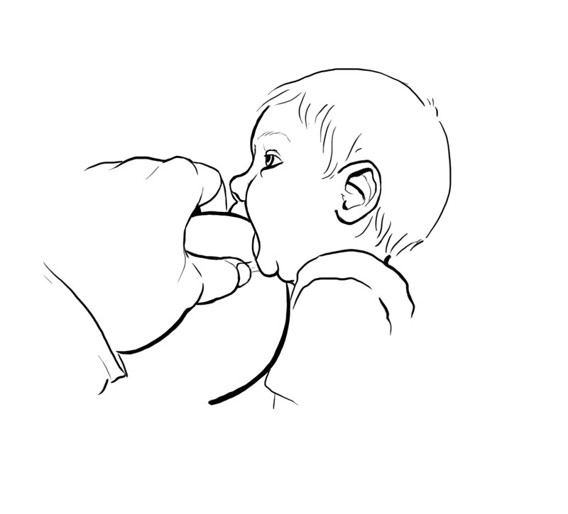
When you compress your breast, make sure your fingers or thumb are parallel to baby’s lips. Keep your fingers far enough back on the breast so that they don’t get in baby’s way as he latches.
Nipple tilting
Nipple tilting can also help baby latch deeply by rolling the underside of the breast into baby’s mouth.
How to do nipple tilting:
1. Hold your baby close with his whole body against yours and his chin touching your breast.
2. Press your thumb into your breast just above the nipple so it is parallel to baby’s lips; point the nipple away from baby (see picture below).
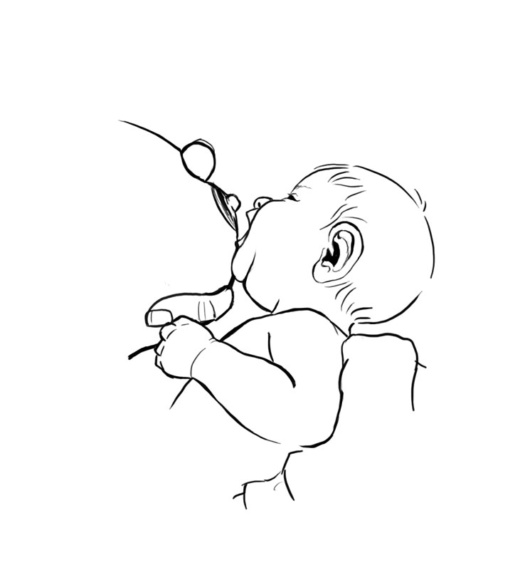
3. The touch of the breast on baby’s chin should trigger a wide-open mouth.
4. With baby’s chin touching your breast, press your thumb into the breast to roll its underside into baby’s wide-open mouth.
5. As the breast enters baby’s mouth, use your thumb to gently push the nipple inside baby’s upper gum before removing your finger.
How to Use Your Baby’s Reflexes While Sitting Up or Side-Lying
It is trickier for baby to latch deeply when you're sitting up or lying on your side, because gravity pulls her down and away from you. To help her get a deep latch, try the following approach to offset the effects of gravity:
1. Position baby under your breasts with her whole body facing and touching you. Make sure there are no gaps between you and her body is not twisted or turned.
2. Use firm, gentle pressure against baby’s shoulders to snuggle her in close. (If lying down, wedge a rolled-up baby blanket behind her back with her head free to tilt back.)
3. Align baby’s nose (not lips) with your nipple.
4. Pull baby in closer so her chin touches the breast. Use a light, steady touch or gentle tapping, which should trigger a wide-open mouth.
5. When her mouth is open wide, with gentle pressure behind her shoulders help her latch deeply, with her lower lip as far from the nipple as possible (see picture below).
6. Once she’s on the breast, make sure her head is free to tilt back slightly for easier swallowing.
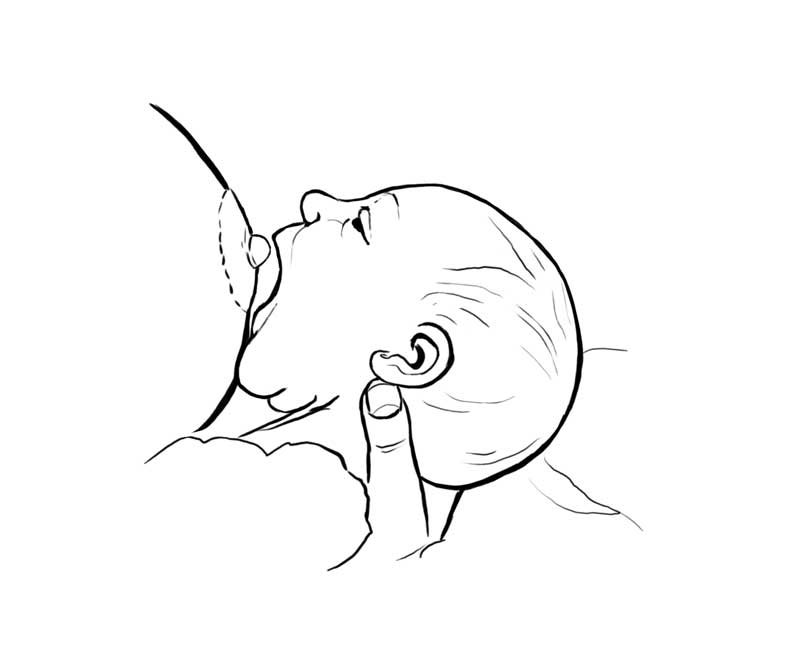
While latching, avoid pushing on the back of baby’s head. If you are sitting up, support her head along your forearm or with your palm on baby’s back and thumb and forefinger behind baby’s ears.
Try Laid-Back Feeding Positions
A deep latch triggers active suckling and may make breastfeeding more comfortable. A deeper latch also gives baby more milk with every suck.
Semi-reclined, or “laid-back” breastfeeding positions
These positions allow gravity to work with your baby’s feeding reflexes to help him get on the breast deeper. When using laid-back positions (coined by UK researcher Suzanne Colson), lean back far enough so that your baby can rest tummy down on top of you but upright enough so that you can see him easily without straining your neck. Make sure your head, neck, shoulders, arms, and legs are all well supported. Think about how you sit or lie back at home when you watch a movie or a television show.
In semi-reclined feeding positions, with gravity helping, baby’s natural head-bobbing raises his head just high enough to hover over your nipple. As baby’s head drops to take the breast, gravity pulls it down automatically for a deep latch. When semi-reclined, you don’t have to micromanage latch to make sure baby takes the breast deeply.
Experiment to find the semi-reclined positions that work best for you. Think of you and your baby as two puzzle pieces. While experimenting, use the following simple adjustments to help you find your best fit:
1. How far you lean back. Experiment until you find an angle that works for you. Some mothers like their torso higher or lower.
2. The direction your baby lies on your body. Position baby lengthwise, diagonally, or across your torso until you find a lie that works well for both of you.
These two adjustments will help you find your own best fit. The picture below shows several ways baby can lie.
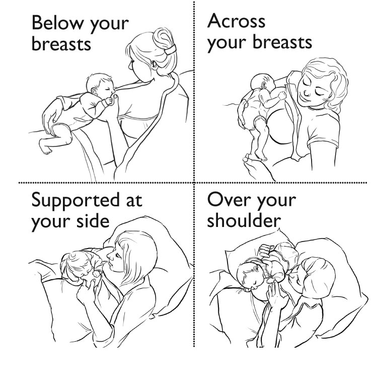
If you’ve given birth vaginally, the below-your-breast position may work well. If you’ve had a cesarean, the other positions prevent baby's weight from putting pressure on your incision. Foot contact triggers some of baby’s feeding reflexes and if missing can make latching more challenging. If baby’s feet are sticking out into thin air, adjust his body so that they are in contact with your body, bedding, or cushions.
Your baby can get to the breast on his own in these positions, but feel free to help him in any way that feels right to you. If his nose seems blocked after latching, you can make an airway by pressing the breast with your fingers.
Problem 4: My baby won’t take both breasts at feedings.
Thankfully, this is something you don't actually need to worry about. Just use the “finish the first breast first” feeding strategy and let baby stay on the first breast for as long as she likes. When she comes off (awake or asleep), burp her, change her if needed, then offer the other side. Most babies take one breast at some feedings and both at some feedings. If she takes one breast, start the next feeding with the other breast.
Your baby is the only one who knows whether she's gotten the right amount of milk or if she needs more. Like other mammal mothers, just follow your baby’s lead.
If your unused breast feels uncomfortably full, express just enough milk to keep yourself comfortable.
Problem 5: My baby breastfeeds too long.
Does your newborn breastfeed longer than 20 to 40 minutes? If he's gaining about 1 oz (30 g) per day, it doesn't really matter how long he breastfeeds. But if you’d like to speed up your slow eater's feedings, try breast compression.
If your feedings last longer because you try to lay your dozing baby in his bed and he wakes up and fusses, know that this happens when babies are moved during light sleep. Instead, hold him for 20 to 30 minutes. Wait until he’s in a deep sleep (no eye movements under eyelids or any body parts moving). If you move him then, he will likely stay asleep longer.
If feedings take longer than 40 minutes because you’re trying to get your baby to feed longer than he wants, stop now. It doesn't matter how long he feeds or whether he takes both breasts. It will save time if you let him finish when he's finished, even if he wants to feed again soon.
Problem 6: Baby is not gaining enough weight.
Is your baby's weight gain a concern because of her place on a growth chart? If so, a good first step is to ask which growth chart was used and compare your baby's weight gain to the average.
If your baby’s weight gain is average or above, there's no cause for concern. If your baby is losing weight or her weight gain is well below average, focus on increasing your milk supply and your baby's milk intake. Milk production is such a hardy process that women who have never been pregnant can produce milk for adopted babies. In most situations, your milk production is under your control. You just need to know how to boost it.
What you need to know to increase milk supply is "drained breasts make milk faster." The more fully drained your breasts are after breastfeeding or pumping and the more times each day your breasts are well drained, the faster you produce milk. Try these strategies.
• Get a deeper latch with the strategies at these links:
There are only so many hours in the day, so you may need to choose among these strategies. How do you decide? If your baby breastfeeds effectively, spend more time breastfeeding rather than pumping. If your baby does not remove milk well at breast, spend more time pumping until you figure out with professional help how to help your baby breastfeed more effectively. Here are some other milk-boosting strategies.
If these strategies don’t seem to help, you may have a less common cause of slow weight gain.
Uncommon Causes of Slow Weight Gain
If the strategies in this section aren’t working, you need skilled help to determine which of the following 3 factors may be contributing to the problem: 1) baby is breastfeeding ineffectively, 2) baby has health issues, and/or 3) your milk production needs help.
Ineffective breastfeeding can be caused by unusual anatomy in the baby, such as tongue-tie. In a tongue-tied baby, the membrane that connects the baby’s tongue to the floor of his mouth is so short that it restricts tongue movements needed for effective milk removal. Tongue tie is easily corrected by a simple office procedure. A local lactation professional can refer you to people in your area who correct tongue ties. Other unusual oral anatomy, such as an unusual palate (roof of the mouth) or lip tie, can also affect breastfeeding. A baby born very prematurely may need lots of practice time at the breast before she can effectively remove milk.
Baby health issues that can affect breastfeeding include neurological issues, respiratory problems, and cardiac defects. In rare cases, a breastfeeding baby may consume plenty of milk but gain weight slowly due to a metabolic disorder or other condition.
Your milk production is probably not the main issue if you’ve previously breastfed a baby who gained weight normally. But if your baby does not breastfeed effectively, this will eventually reduce your milk supply.
Milk production tends to be a hardy process. Adoptive mothers who have never been pregnant can produce milk for their babies just by nursing them. But as with every other organ, not all breasts function normally. Your anatomy and hormonal health can affect your ability to make milk. If you think milk supply may be the issue, seek skilled help by going to www.ilca.org, click on Find a Lactation Consultant, and put in your zip code. See also the excellent book The Breastfeeding Mother’s Guide to Making More Milk, by Diana West and Lisa Marasco, which describes the many factors that can affect your milk production.
Try an At-Breast Supplementer
These devices consist of a container with one or two long, thin tubes that extend into baby’s mouth to provide extra milk while baby breastfeeds.
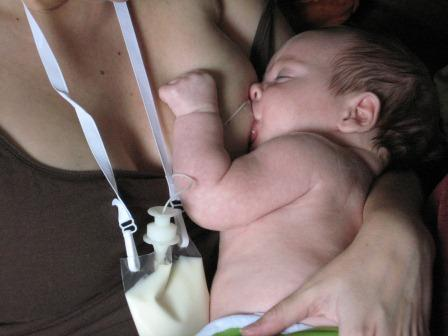
There are several advantages of providing needed supplement at the breast:
• Baby is fed once without needing to be fed again after breastfeeding.
• Baby takes milk from the breast while receiving milk from the tube.
• Baby gets positive reinforcement for breastfeeding.
Some mothers are comfortable using these devices. Others find them difficult and prefer to supplement in other ways. Examples of at-breast supplementers include the Lact-Aid Nursing Trainer (pictured), the Medela Supplemental Nursing System (SNS), and the Medela Starter SNS.
Herbs and Medications
In some cases, herbs and prescription medications help increase milk supply but only if you remove the milk from your breasts as often as recommended. They may interact with drugs and should be avoided with certain health problems. Discuss them first with your health care provider.
Fenugreek
The herb fenugreek (used in artificial maple syrup) may increase milk production and has a long history of international use. The U.S. Food and Drug Administration (FDA) rated fenugreek as Generally Recognized as Safe, but it can interact with some drugs. The dose recommended to increase milk production is 3 to 4 capsules (of at least 500 mg each) 3 times per day (9 to 12 per day). You know you’re taking enough when your sweat and urine smell like maple syrup.
Prescription medications
Two drugs that increase milk production in some women are metoclopramide (Reglan) and domperidone (Motilium). Both are given for stomach problems. Domperidone is not recommended for breastfeeding mothers by the FDA, due to side effects reported in very ill people receiving it intravenously. Outside the U.S., it is used often to increase milk production at its recommended dose of 10 to 20 mg 3 times per day.
Depression is a side effect of metoclopramide, so avoid it if you have a history of depression. A rare but usually permanent side effect may occur if it is taken longer than one month: tardive dyskinesia, or involuntary grimacing. These side effects make this drug a less-than-optimal choice. But in some situations it can help when used short term at its recommended dose of 10 to 15 mg 3 times per day.
When stopping either drug, gradually taper off of it by 10 mg per week for several weeks to minimize the impact on milk production.
How to Do Hands-on Pumping
Hands-on pumping can help you pump more milk at every session. Because it drains your breasts more thoroughly and "drained breasts make milk faster," it can also help speed milk production.
Scientists found that hands-on pumping increases pumping milk yields an average of 48%. Rather than relying on the pump alone, use your hands to help with the milk-removal work by following these steps.
1. First, massage both breasts.
2. Double-pump (pump both breasts at the same time), compressing your breasts often while pumping. Continue until milk flow slows.
3. Massage your breasts again, focusing on any areas that feel firm.
4. Finish by either hand-expressing your milk into the pump’s nipple tunnel or by single-pumping, whichever yields the most milk. Either way, during this step, do intensive breast compression and massage on each breast, moving back and forth from breast to breast several times until you’ve drained both breasts as fully as possible.
This entire process takes an average of about 25 minutes. You can do it right after breastfeeding. Or to get more milk for your baby, wait 30-60 minutes.
Hands-on pumping is easier if you use a hands-free pumping bustier. Several are available that fit any pump and can be worn over your bra. Find them with an internet search for “hands-free breast pumping.”
Breastfeed More
To help your baby gain more weight, breastfeed at least 8 to 12 times per day. Offer each breast more than once, at each feeding going back and forth from breast to breast as many times as baby is willing. Focus on the number of feedings per day, not the time between feedings. Encourage baby to breastfeed whenever she shows feeding cues, such as rooting, hand-to-mouth, or fussing, even if it's only been a short time.
If your baby sleeps so much that breastfeeding at least 8 times per day is a challenge, know that babies can breastfeed effectively during light sleep. Rather than trying to wake your baby in a deep sleep, which can be hard, lean back into a semi-reclined feeding position (not flat on your back) and lay baby tummy down on your body between your breasts. As her feeding reflexes are triggered, help her latch.
Growth Charts: What You Need to Know
If the concern about your baby's weight relates to his place on the growth chart, ask if it was a World Health Organization chart, which is based on the growth of exclusively breastfed babies. Other charts are based on formula-fed babies, and weight gain norms vary by feeding method.
It also helps to know how to interpret the chart. Baby’s growth is plotted on a series of percentile lines, with an average baby at the 50th percentile. Of 100 healthy children, 49 will weigh less and 50 more.
A weight at a higher percentile is not “good” and a lower percentile is not “bad.” By definition, there are thriving children at every percentile. Some are chunky and some are petite, but their percentile is not necessarily a reflection of their health or growth. Babies born preterm are often at low percentiles at first, even when gaining weight well. Pregnancy related factors—such as a mother’s large weight gain or high blood sugar levels from diabetes--can artificially inflate a baby’s birthweight to the 95th percentile. After birth, these babies may fall in the weight percentiles as their growth adjusts to their natural norm, even with good milk intake.
Your baby's weight gain over weeks and months gives you an accurate picture of how breastfeeding is going. If your baby is gaining consistently and well (about 1 oz [30 g] per day during the first 3 months), his actual percentile is irrelevant. But if over time his percentile drops, it is wise to take a closer look to see if breastfeeding adjustments are needed.
Problem 7: Baby and I struggle with too much milk.
Oversupply—aka overabundant milk production or hyperlactation—may cause uncomfortable breast fullness and regular plugged ducts. Your baby may deal with fast milk flow by pushing away from the breast, clamping down on your nipple, or refusing to breastfeed. He may gulp, choke, or sputter while he feeds. What should you do? Here are some strategies.
In extreme cases, some herbs and medications can help slow milk production. If needed, your local lactation professional (with input from your health care provider) can guide you.
Feeding Patterns That Slow Milk Production
If you’ve confirmed from your baby’s weight gain that too much milk is the problem, consider bringing your milk production closer to your baby's needs. If you're worried about ending up with too little milk, know that milk production is a hardy process. If you decide later that you hate your new milk level, you can increase it again. The following strategies can help you bring your milk flow to a better place.
One breast per feeding
An easy way to slow milk production is to limit each feeding to one breast. If baby still seems hungry, you can return to that same breast as many times at that feeding as needed. Switch breasts only at the next feeding time, not during a feeding.
If your unused breast feels full before the next feeding, pump to comfort on that side, expressing just enough milk to make you comfortable and no more. Don’t completely drain that breast or it will signal your body to keep making too much milk. Using one breast per feeding along with pumping to comfort allows your milk production to slow gradually without discomfort or health risks. If your baby is already taking one breast per feeding, move on to the next strategy.
Block feeding
Block feeding means using the same breast for specific blocks of time. Start with 3-hour blocks. Baby can feed as often as he likes, but only on the same breast for up to 3 hours. After that 3-hour block ends, offer the other breast for the next 3-hour block of time. Continue this cycle until your milk production is more manageable for you and your baby but no longer than 1 week. Then use the "finish the first breast first" feeding strategy, which means letting baby nurse as long as he likes on the first breast and then offering the second breast, which he may or may not take. If 3-hour blocks aren't long enough to bring your milk flow under control, extend the time blocks to 4 hours, 5 hours, or even longer.
To prevent mastitis when using block feeding, either pump to comfort or completely drain your breasts with a pump on the morning of the first day. Once you’ve drained your breasts as completely as possible, put baby immediately to breast. This will begin the first of the 3-hour feeding blocks. As days pass, if either breast becomes very full, use the breast pump again to drain yourself fully in the morning. Most mothers only need to drain their breasts with the pump once or twice.
How to Know If Too Much Milk Is Your Problem
Before taking steps to adjust your milk production, make sure too much milk is the real problem. Explosive poops may be caused by a stomach bug or food sensitivity. Green poops are in the normal color range. Rarely, a health issue may cause a baby's struggle with milk flow.
An easy way to confirm an oversupply is to compare your baby’s weight gain to the average of 2 lb (.90 kg) per month during the first 3 months. If baby’s weight gain is double this or more, too much milk is likely the cause and it makes sense to adjust your milk production. If baby's weight gain is average or below, too much milk is probably not the problem. Try laid-back feeding positions. Or give your baby a few weeks of practice to get more comfortable with your milk flow. If the problem continues, ask your baby’s health care provider to rule out health issues.
Positions That Give Baby More Control Over Milk Flow
With too much milk, feeding positions in which milk flows downhill into baby’s mouth are the most challenging. Whenever baby struggles with milk flow, a good short-term strategy is to try positions like the laid-back breastfeeding positions pictured here, because baby’s head is above the breast and gravity makes milk flow easier to manage.
Lying on your side to breastfeed can also help because baby can let overflow milk dribble out of his mouth rather than having to swallow fast to prevent choking. (Lay a towel under baby first!)
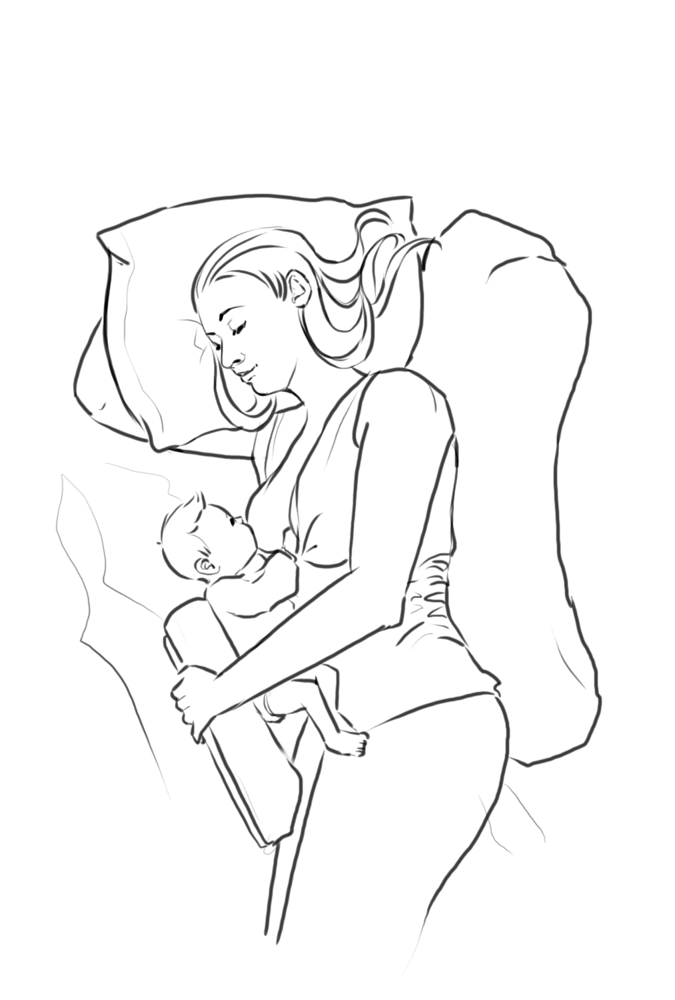
Most important is never to hold your baby’s head to your breast when he wants to pull off and catch his breath.
Problem 8: My milk supply dropped after I returned to work.
Before taking steps to boost your milk supply, first compare how much milk baby takes during your workday with what's expected. Sometimes the disconnect between volume of milk pumped and drank isn’t a problem with milk supply. The culprit may be overfeeding.
If your baby’s milk intake is in the right range but your milk production isn't, the magic number concept may help you understand how to boost your milk supply and keep it steady.
Your daily routine also has a major impact on your milk supply. Even minor adjustments in your routine can make a big difference.
Because pumping is probably key to your milk supply, click on the link below to learn what to expect and strategies that can help you pump more milk at each session.
Solid foods take the place of your milk in your baby’s diet. With solids added, baby's need for milk decreases. This also means your milk supply will likely decrease, even if number of feedings does not. If your supply decreases slowly after solids are started but your baby is satisfied, you don't need to boost it.
Most employed mothers stop pumping between 9 and 12 months. After 1 year, baby can drink other milks. You can continue breastfeeding when you’re home, but you don't need to keep pumping. When you're ready to stop, drop one daily pump, give your body a few days to adjust, then drop another. Continue until you're done. Then give yourself a big pat on the back from me for a job well done!
Problem 23: I think I should be pumping more milk.
Before assuming your pumping milk yield is too low, you need to know what’s average. When you compare your experience with the norm, you may find you’re doing just fine.
Learn how much milk to expect at a pumping session
If you're exclusively breastfeeding and it's going well, your milk production dramatically increases from about 1 oz (30 mL) on day 1 to a peak of about 30 oz (900 mL) per baby by around day 40. Breastfeeding intensively boosts your milk supply during the early weeks. But while your supply is ramping up, expect to pump less milk than you will later.
Assume you’ll start small
It takes practice to train your body to respond to your pump like it does to your baby. The milk you pump is not an accurate gauge of your milk production, especially at first. Think of your first sessions as mostly practice, and don’t expect to get much milk.
Know the factors that can affect your milk yield
These include those listed below.
Know how to increase pumping milk yields
Two well-known strategies include:
If baby takes more from the bottle than you pump at a session
During breastfeeding, the natural ebb and flow of milk leaves baby full on less milk. The fast, consistent milk flow of the bottle can override baby's appetite-control mechanism, causing overfeeding. Taking more milk from the bottle reflects a difference in the milk-delivery system rather than low milk production. A weight gain of about 1 oz (30 g) per day in the first 3 months means your milk production is great.
If these strategies don’t work
Breast pumps work well for most women, but there are exceptions. If you’ve tried all of these tips but still can’t pump milk effectively, try switching to a hospital-grade pump. Also try hand expression.
How to Hand Express Milk
Hand expression can be useful to help relieve breast fullness, stimulate milk production, and provide milk for your baby.
Getting ready
First wash your hands well. Find a clean collection container with a wide mouth, like a cup. If possible, express in a private, comfortable place where you can relax. Feeling relaxed enhances milk flow.
Find your sweet spot
Whichever hand-expression technique you use, the key is finding your “sweet spot,” the area on your breast where milk flows fastest when it is compressed. Try different finger positions until you find it. If the dark area around your nipple (areola) is large, your sweet spot may be inside it. If small, it may be outside it.
Do what works best and expresses the most milk
This method combines the World Health Organization technique with others:
1. Before expressing, gently massage your breasts with your hands and fingertips or a soft baby brush or warm towel.
2. Sit up and lean slightly forward, so gravity helps milk flow.
3. To find your sweet spot, start with your thumb on top of the breast and fingers below, both about 1.5 inches (4 cm) from the base of the nipple. Some mothers find it helpful to curl their hand and use just the tips of their fingers and thumb. Several times apply steady pressure into the breast toward the chest wall. If no milk comes, shift finger and thumb either closer to or farther from the nipple and compress again a few times. Repeat, moving finger and thumb until you feel slightly firmer breast tissue and gentle pressure yields milk. After finding your sweet spot, skip the “finding” phase and start with your fingers on this area.
4. Apply steady pressure on areas of milk in the breast by pressing fingers toward the chest wall, not toward the nipple.
5. While applying inward pressure on the breast, compress thumb and finger pads together (pushing in, not pulling out toward the nipple). Find a good rhythm of press—compress—relax, like a baby’s suckling rhythm.
6. Switch breasts every few minutes (5 or 6 times in total at each expression) while rotating finger position around the breast. After expressing, all areas of the breast should feel soft. This process usually takes about 20 to 30 minutes.
If needed, adjust
Hand expression should feel comfortable. If not, you may be compressing too hard, sliding your fingers along the skin, or squeezing the nipple. If you feel discomfort, review the instructions, and adjust your technique. It is important to find the method that works best for you. You can find several demonstration videos online by doing a search for “hand expression of breast milk.”
How to Trigger More Milk Releases While Pumping
When you begin pumping, train your body to respond to the pump like it does to your baby, with many milk releases. You may also need extra help with milk releases when you are under stress or change pumps.
Use your senses to trigger milk releases
You may find that 1 or 2 of your senses work better for you than the others, so try them all to see which work best for you.
• Feelings: Make yourself comfortable, and pump in a private area where you can relax. Close your eyes and imagine your baby at the breast. Breathe deeply, and imagine a tranquil, relaxed place.
• Sight: Look at your baby or a photo or video of her.
• Hearing: Play a recording of your baby cooing or crying.
• Smell: Sniff your baby’s blanket or her clothes.
•Touch: Gently massage your breasts or apply warm compresses.
• Taste: Sip a favorite warm drink to relax you.
Vary your pump’s speed
Most babies suck faster at first to trigger a milk release and then move their jaws slower while more milk flows. If your pump has a speed or cycle control, you can mimic your baby’s rhythm to get more milk more quickly.
1. Start pumping on the fastest setting.
2. When a faster milk flow starts, go to one of its slowest settings.
3. When milk flow slows, return to a fast setting.
4. Repeat until you see 4 to 5 milk releases (faster milk flow).
Two-phase pumps automatically switch from fast to slow speed after 2 minutes of pumping, the average time for a let-down to occur. If you have a 2-phase pump, customize it by pushing its let-down button for a faster speed whenever your milk flow slows and push it again to go to a slower speed when the next milk release occurs. Use the let-down button several times during pumping to speed up the milk-removal process.
What Is a Milk Release?
The key to pumping more milk is not stronger suction but more let-downs, or milk releases. The fewer milk releases during pumping, the less milk pumped. With no milk release, you pump only the small amount of milk around your nipples, at most about 1/2 oz (15 mL) total.
What is a milk release? It’s when the muscles inside the breast squeeze the milk-making glands and push the milk out. Without it, most milk stays in your breasts. Milk release is caused by the hormone oxytocin. Some mothers feel it as a tingling or see it as leaking milk. Others feel and see nothing. By watching your milk flow during pumping, you'll see your milk releases as an obviously faster milk flow. During breastfeeding, you can hear milk releases when your baby gulps.
Mothers average 5 milk releases per feeding. Some feel the first, but few feel later milk releases. Some never feel any. Even if you don’t feel them, your baby’s swallowing tells you they’re happening.
When your baby breastfeeds, milk release is triggered by his suckling, the feel of his soft skin, his warmth, and your loving thoughts. A milk release can happen even when you're not breastfeeding if your breasts are touched, you hear a baby cry, or when you think about your baby. Feelings of tension, anger, or frustration can block it.
When you pump, your baby’s softness and warmth are missing. Suction from a piece of plastic feels very different from your baby’s warm mouth and tongue. Practice time with your pump is important, because you need to condition your body to release your milk to the feel of the pump, and this can take time.
How Your Pump and Your Suction Setting Affect Pumping
Choosing the best pump for your situation and a pump that fits you well will help you get the best milk yields.
Another important factor is the suction setting you're using. You might assume that a stronger suction yields more milk. But if so, you would be wrong. Too-high suction settings can actually pump less milk. That’s because tensing up from discomfort can block your milk flow. If you set your pump suction too low or too high, you’ll probably get less milk.
How do you find your best suction setting? Turn up your pump suction until it feels slightly uncomfortable and then turn it down slowly. Stop when you reach the highest setting that feels completely comfortable to you both during and after pumping sessions. You may end up on your pump’s maximum setting, minimum setting, or anywhere in between. The highest comfortable suction setting is what you’re striving for, not a specific place on your pump’s controls.
What You Need to Know About Pump Fit
Your pump fit affects your pumping comfort and milk flow. Fit is determined by how well your nipples fit into the pump's opening, or "nipple tunnel" (Figure 1). If the nipple tunnel squeezes your nipple, it slows milk flow and you may pump less milk. A too-large or too-small nipple tunnel can also cause discomfort.
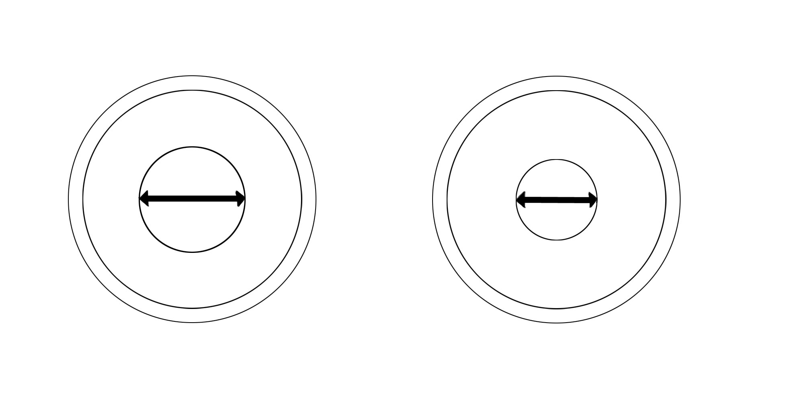
Figure 1. Pump nipple tunnels come in different sizes.
You have a good fit if during pumping you see some (but not too much) space around your nipples as they move freely in the nipple tunnel (Figure 2). If your nipple rubs along the tunnel’s sides, the tunnel is too small (Figure 3). It can also be too large. Ideally, you want no more than about a quarter inch (6 mm) of the dark circle around your nipple (areola) pulled into the tunnel during pumping. If too much areola is pulled in, this can cause rubbing and pain (Figure 4). You’ll know you need a different size nipple tunnel if you feel discomfort during pumping even when your pump suction is near its lowest setting.
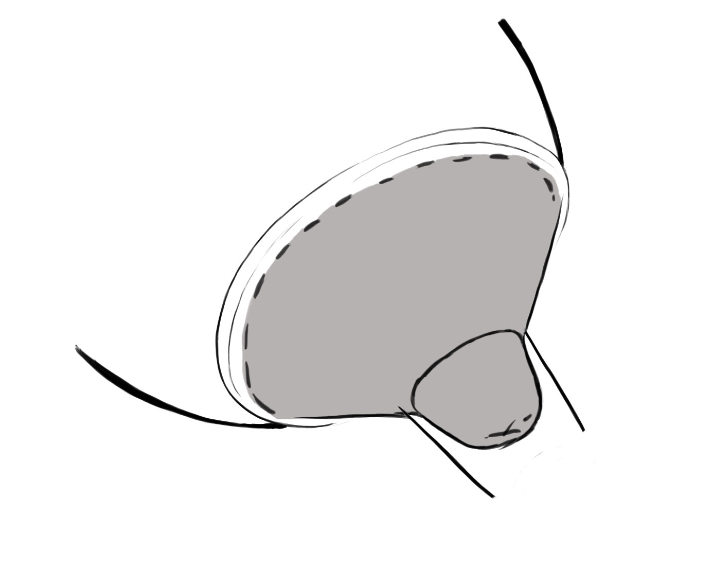
Figure 2. Some space around your nipple during pumping means you have a good fit.
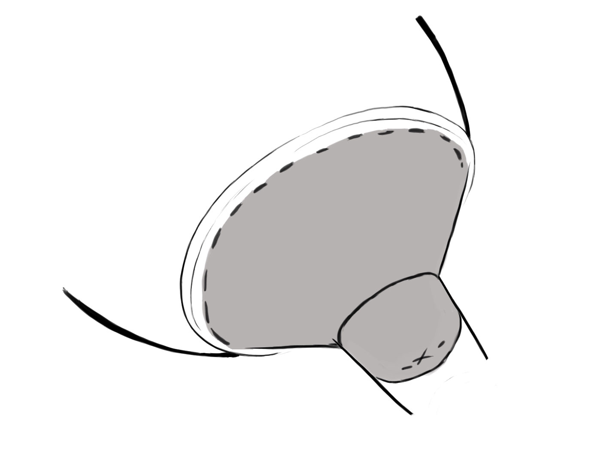
Figure 3. If your nipple rubs along the sides of the pump’s tunnel, the tunnel is too small.
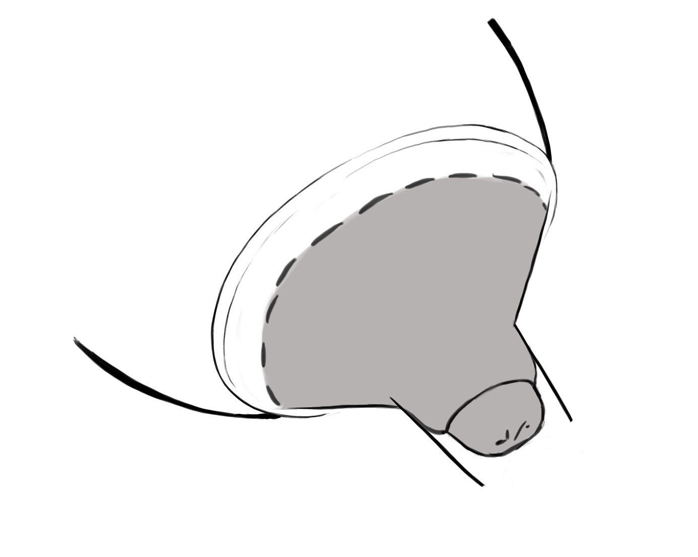
Figure 4. If too much areola is pulled in and rubs, the nipple tunnel is too large.
Don’t assume that large breasts mean you need a large nipple tunnel. Small-breasted women can have large nipples and large-breasted women can have small nipples. Because few women are totally symmetrical, you may need one size nipple tunnel for one breast and another for the other.
Size choices
When choosing a breast pump, ask if the brand you’re considering offers multiple size options. If not, you’re taking a chance. Most better breast pump companies sell a variety of nipple-tunnel sizes, so you can tailor your pump to your anatomy.
The popular Ameda and Medela brands offer 6 or 7 size options and sell the part with the nipple tunnel separately, so if you need another size, you can buy just that piece. The Medela nipple tunnels also fit the Hygeia brand pumps. Some brands, such as Avent and Evenflo, offer only two sizes. Their pumps include an insert piece that you can either leave in or remove. Other breast pump brands, such as Playtex, offer only one size.
Pump fit changes over time
Finding your best pump fit is not the end of the story. You need to recheck your fit every so often, because your nipples may expand with breastfeeding and pumping. Even if you now see space around your nipples during pumping, this space may vanish. If your nipples begin to rub along the nipple tunnel, don’t be surprised. This just means it’s time to switch to a larger nipple tunnel.
Problem 22: I'm confused about which pump to choose.
Which pumps are better for what purpose? Here are some examples.
Your baby isn’t breastfeeding or you need to boost your supply
For these situations, choose the type of breast pump used in hospitals. When rented, the motor is shared. But each mother buys her own collection kit, so one mother’s milk never touches another’s. A double collection kit lets you pump both breasts at the same time, which takes half the time of a single kit. These pumps are larger and heavier than those bought for home use and are durable enough to be used by many people. They offer more suction and speed settings and a smoother feel, making them a more effective substitute for a nursing baby.
You are returning to work full time or pump daily
You will likely get the best long-term results with a professional-grade double electric breast pump. These pumps are not durable enough for sharing, and some are not safe to share for hygiene reasons. When selecting this type of pump, check the length of the motor warranty. Those with a warranty of 1 year or more are less likely to break down with frequent use. These pumps include a double collection kit. Some models feature different carry bags styles, such as shoulder bags or backpacks. Recommended brands include Hygeia, Medela, and Ameda.
You work part time or will not be pumping every day
If you work less than 20 hours per week, your breast pump will not play as key a role in maintaining your milk supply, giving you many more choices. Keep in mind that pumping one breast at a time with a single pump takes twice as long as double pumping. A manual pump, which is usually powered by squeezing the pump’s handle, can get tiring if you use it often. Visit some of the websites that compare pumps and choose those with features important to you. Notice which brands offer size choices, as if only one size is available, you may have major issues with pump fit.
How Breast Storage Capacity Affects Pumping
Breast storage capacity is the amount of milk available in your breasts during the time of day when your breasts are at their fullest. Storage capacity is based on the amount of room in your milk-making glands, not breast size. It varies among mothers and in the same mother from baby to baby. Mothers with a large storage capacity usually pump more milk at a session than mothers with a small storage capacity.
To figure out where you fall on the storage-capacity spectrum, think about how much milk you pump. If you’re exclusively breastfeeding and pumping for a missed feeding, a milk yield from both breasts of much more than about 4 ounces (120 mL) may indicate a larger-than-average storage capacity. If you never pump more than 3 ounces (90 mL), even when it has been many hours since your last milk removal, your storage capacity may be smaller than average.
Mothers of all storage capacities produce plenty of milk for their babies, but their feedings patterns vary. What matters is not how much baby gets at each feeding, but how much he gets in a 24-hour day.
How Your Emotions Affect Pumping
Your feelings affect the hormones that trigger let-down, or milk release. Without a milk release, most of the milk stays in your breasts.
Feeling upset, stressed, or angry releases adrenaline into your bloodstream, which can block milk release. If your pumping is compromised by negative emotions, take a break and pump later, when you’re feeling calmer and more relaxed.
Pumping about a 1/2 oz (15 mL) or less total from both breasts when you usually pump much more means you probably did not have a milk release.
How Time Passed Since Last Breastfeeding or Pumping Affects Milk Yield
The more time that has passed since your last milk removal (breastfeeding or pumping), the more milk you should expect to pump, to a point. Keep in mind that full breasts make milk slower. If you routinely wait to pump until your breasts are really full, this gives your body the signal to slow milk production. On average, if you are exclusively breastfeeding, have had time to practice with your pump, and it’s working well for you, you can expect to pump:
• About half a feeding if you’re pumping between regular feedings
• A full feeding if you’re pumping for a missed feeding
For the first month of life, how much milk a baby takes at a feeding increases, from less than a teaspoon (10 mL) on the first day, to about 1 oz (30 mL) by day 3. At 1 week, 1.5 oz (45 mL) is an average feeding. By 2 weeks, as baby’s stomach grows, this increases to about 2 oz (60 mL). By 4 weeks or so, baby is up to his peak feeding volume of about 3 to 4 oz (90–120 mL), which stays about the same until 6 months of age, when babies start solids and the amount of milk they need decreases. These averages can help you decide whether your pumping yields are above average, below average, or right on.
How Time of Day Affects Pumping
Most women pump more milk in the morning than later in the day. That’s because milk production is not always at the same level. To get the milk they need, many babies respond to this difference by breastfeeding more often when milk production is slower, usually in the afternoon and evening. If your goal is milk storage, a good time to pump is usually 30 to 60 minutes after the first morning feeding. Most mothers will pump more milk then than at other times. But experiment. You may not be average and may find you pump more milk at a different time.
How Giving Formula Affects Pumping
A mother who is exclusively breastfeeding (baby gets no other liquids or solids and is primarily fed at breast) will usually pump more milk at a session than a mother who gives formula regularly, because more frequent or more complete milk removals increases milk production. When a baby is fed formula regularly, this takes the place of mother’s milk, so baby breastfeeds less often or takes less at feedings, which causes less milk to be made.
If you’re giving formula and your baby is between 1 and 6 months old, you can calculate how much milk you should expect to pump at a session by determining what percentage of your baby’s total daily intake is your milk. To do this, subtract from 30 ounces (900 mL) the amount of formula your baby receives each day. For example, if you’re giving 15 ounces (450 mL) of formula each day, this is half of 30 ounces (900 mL), so you should expect to pump about half of what an exclusively breastfeeding mother would pump.
Average Pumping Volumes by Baby’s Age
Expect to pump about half a feeding if you pump 30 to 60 minutes after the first morning breastfeeding that you’re up for the day. Expect to pump a full feeding if you pump instead of breastfeeding at a usual feeding time. How much milk a baby consumes per feeding varies by age.
Average Feeding Volume by Baby’s Age
| Baby’s age | Average volume per feeding | Average volume per day |
| 1 day | 0.2 oz. (10 mL) | 2 oz. (50 mL) |
| 3 days | 1 oz. (30 mL) | 8 oz. (250 mL) |
| 1 week | 1.5 oz. (45 mL) | 15 oz. (450 mL) |
| 2 weeks | 2 oz. (60 mL) | 20 oz. (600 mL) |
| 1 month | 3–4 oz. (90–120 mL) | 25-30 oz. (750-900 mL) |
| 6 months | 3–4 oz. (90–120 mL) | 30 oz. (900 mL) |
Factoring in baby's age, an average pumping milk yield between feedings during the first week would be about 1/2 oz (15 mL), the second week about 3/4 to 1 oz (22 to 30 mL), the third week about 1.25 to 1.75 oz (37- 52 mL), and after 1 month, about 1.5 to 2 oz (45-60 mL).
Between 1 and 6 months, your baby's feeding volumes and daily milk intake will not vary by much, because her rate of growth slows. (This is not true of formula-fed babies.) When your baby starts eating solid foods, her need for milk will gradually decrease, as solids take the place of milk in her diet.
Plan Your Daily Routine with Milk Production in Mind
Meeting your long-term breastfeeding goals is easier if you feed your baby as much as possible directly from your breasts. Many mothers pump often enough at work but don’t breastfeed as much as they could. They may pump 3 times at work but only breastfeed 2 or 3 times. (A drop from 8 daily milk removals while on maternity leave to 5 or 6.) In other words, at times they could be breastfeeding, they’re not.
Breastfeeding less means your baby needs more expressed milk while you’re away, which you have to work harder to pump. Your baby will need on average about 30 ounces (900 mL) of milk per day. The more of that milk your baby gets directly from you, the less milk you need to express. The opposite is true, too. The less milk your baby gets from the breast, the more milk you’ll need to leave for her while you’re at work. What’s important to a baby is not how much milk she gets at each feeding, but how much milk she gets in each 24-hour day.
How you plan your daily routine can make a world of difference. To maximize breastfeeding, consider these options:
• Breastfeed twice in the morning, once when you wake up and again before you leave baby.
• Breastfeed as soon as you see baby after work. If she seems hungry right before you arrive, suggest the caregiver give as little milk as possible until you get there.
• Consider nursing midday. Can you go to your baby for one or more feedings during your workday or have baby brought to you?
• Think about how to fit in more breastfeedings. This may be key if your baby starts sleeping longer at night.
• Nurse before bedtime. If your baby sleeps for longer than 8-hour stretches at night, wake her to breastfeed right before you go to bed, or if you prefer, pump.
Your “Magic Number” Can Help You Meet Your Goals
Every breastfeeding mother has a magic number. This is the number of daily milk removals (breastfeeds plus pumps) needed to keep her milk supply steady. To estimate your magic number, think back to your maternity leave and the number of times each day your baby breastfed. This is probably pretty close to it if your maternity leave was at least 6 weeks long, you breastfed on cue rather than on a fixed schedule, and your exclusively breastfed baby gained weight well. The key to keeping your milk production steady after returning to work is keeping your total number of daily milk removals stable over the long term. To understand this better, you need to know the two main dynamics that affect your long-term milk production.
Breast fullness
What you need to know about this is "drained breasts make milk faster and full breasts make milk slower." The fuller your breasts become, the more milk production slows.
The opposite is also true. Milk production speeds when your breasts are drained more fully. At an average breastfeeding, baby takes about 2/3 of the milk and leaves 1/3. To increase your milk supply, your baby feeds more often and longer, taking a larger percentage of the milk. This happens naturally when you’re with your baby and feeding on cue.
Breast storage capacity
This dynamic explains why women have different magic numbers. Breast storage capacity refers to the maximum volume of milk available in your breasts when they’re at their fullest during the day. Storage capacity is not about breast size but rather the space in your milk-making glands. Smaller-breasted mothers can have a large storage capacity and larger-breasted mothers can have a small capacity.
Differences in storage capacity account for much of the variations among breastfed babies' feeding patterns:
• Whether baby usually takes one breast or both.
• Number of daily feedings needed for baby to gain weight.
• Baby’s longest sleep stretch.
Both large-capacity and small-capacity mothers produce plenty of milk. But their babies feed differently to get the milk they need. A mother with a large storage capacity has more room to hold milk, so it takes more milk (and more time) for the pressure in her breasts to build to the point that milk production slows. With more milk available in her breasts, her baby may always be satisfied with one breast. He may gain weight well with fewer feedings per day than the average baby. And he may sleep for longer stretches at night without milk production slowing.
The mother will a small storage capacity has less milk available at each feeding, so her baby may want both breasts more often, need more daily feedings to get the same amount of milk, and wake more often at night to feed. If the baby of the small-capacity mother sleeps too long, his mother’s breasts quickly become full and her milk production slows.
If after returning to work your milk production decreases, count how many times each 24 hours you’re removing milk from your breasts. Chances are your number of milk removals has dropped below your magic number. Maybe your baby is sleeping longer at night. Maybe you’re breastfeeding less at home or pumping less at work. No matter the cause, you can reverse this trend by increasing your number of milk removals. Staying at your magic number should hold your milk production steady. Boosting your daily milk removals above your magic number should increase your milk production.
Compare Baby’s Milk Intake with What’s Expected
To thrive, breastfed babies between 1 and 6 months of age need on average about 30 oz (900 mL) of milk per day. If your baby feeds around the clock and you are apart for 8 to 12 hours during your workday, she'll need about 10 to 15 oz (300 to 450 mL) of milk. This is 1/3 of 30 oz for 8 hours and half of 30 oz for 12 hours. If your baby sleeps the entire night, she'll need the full 30 oz during her waking hours.
Formula-fed babies continue to consume more and more formula between 1 and 6 months of age, but this is not true for breastfed babies. Milk intake stays remarkably stable because baby’s rate of growth slows. At around 6 months, when a breastfed baby starts eating solid foods, her need for mother’s milk decreases.
If your baby takes much more milk than expected while you’re at work, consider these possibilities:
• The bottles are too full and much milk is being discarded.
• A fast-flow nipple is used to feed baby, which may cause overfeeding.
• The caregiver is overusing feeding as a way to calm your baby.
• Baby needs more milk during the workday to make up for for too little breastfeeding when you’re together.
If one of the above is the cause, you may be able to make adjustments to decrease the amount of milk needed while you’re away.
2 - Nipple Pain
The only type of nipple pain you should live with is discomfort during the first minute or two of breastfeeding during your baby’s first 2 weeks of life.
Toe-curling pain when baby latches is not normal. Nor is pain that lasts throughout or between feedings. Severe, long-lasting pain or broken skin and color changes on your nipple are problems in need of a solution. The strategies in this section should help you achieve comfortable breastfeeding. But if they don't it's time to seek breastfeeding help. No one should have to sacrifice breastfeeding or live with nipple pain.
-
My nipples hurt while I'm feeding my newborn.
-
My nipples hurt between feedings.
-
My nipples felt fine but now hurt during feeding.
-
Baby is biting me.
Problem 9: My nipples hurt while I'm feeding my newborn.
Don’t just live with painful breastfeeding because you’ve been told your nipples will “toughen up.” Breastfeeding mothers don’t develop nipple calluses, so this idea is simply wrong. Nipple pain goes away over time because babies eventually develop the head-and-neck control they need to latch themselves onto the breast deeper. But why wait when breastfeeding can be more comfortable right away? Try these strategies.
If these strategies don’t help, read about other less common causes of nipple trauma.
Most important, don’t suffer in silence or give up on breastfeeding. If you can’t find the cause of your pain on your own, it’s time to get skilled breastfeeding help. To find a lactation consultant in your area, go to www.ilca.org, click on the “Find an LC” link, and enter your zip code.
How Oversupply Can Contribute to Nipple Pain
How can making too much milk cause nipple pain? It can happen when baby compresses your nipple to make overwhelming milk flow more manageable. You can rule this in or out by considering your baby’s weight gain. Average weight gain during baby’s first 3-4 months is about 2 lb per month. Babies of mothers with oversupply often gain double that or more. What can you do if that’s the problem? Try laid-back breastfeeding positions, as gravity may give baby more control over milk flow, ending the need to compress the nipple (see picture below).
Bacterial and Yeast Infections of the Nipple.
Wherever there’s broken skin, infections can occur. Nipple trauma puts you at greater risk for developing a bacterial or yeast infection on your nipple, as well as mastitis, an inflamed or infected area in your breast. You should consider infection a possibility if breastfeeding suddenly becomes much more painful and your healing slows or stops. Both bacterial and yeast infections can cause severe pain. The pain may become so intense you turn to pumping instead.
Bacterial infections of the nipple
In addition to intense pain and slowed healing, if your infection is bacterial, you may also see pus or yellow scabs on your nipple. In most cases, nipple pain that lasts for weeks indicates a staph infection. Sometimes prescribed Bactroban ointment can relieve it. Another effective treatment is a course of oral antibiotics, nearly all of which are compatible with breastfeeding. Oral cloxacillin or erythromycin (for those allergic to penicillin) taken in 500-mg doses every 6 hours for 10 days resolves nipple bacterial infection in nearly 80% of mothers. In some unusual cases, long-term antibiotic treatment may be necessary.
Yeast infections of the nipple
This type of nipple infection is caused by an overgrowth of yeast, which can lead to severe nipple pain often described as “burning” or “shooting.” The skin around your nipple may be red, scaly, or flaky, or it may be smooth and shiny. Your nipples may or may not be itchy. The pain may be worse after feeding or at night. If your baby also has a yeast infection, it may appear as white patches inside his mouth (thrush) or as a diaper rash. Yeast can cause nipple pain even if no thrush is seen in baby’s mouth. If you have a yeast infection of the nipple, both you and your baby need to be treated with antifungals. See your health care provider for diagnosis and treatment.
Other skin problems
Contact dermatitis, impetigo, eczema, and psoriasis can also cause nipple pain. If you’re not sure what type of skin problem you have, see a dermatologist for diagnosis and treatment. Nearly all treatments are compatible with continued breastfeeding.
Unusual Breast or Nipple Anatomy
One of the most common anatomy issues to contribute to nipple pain is the combination of large nipples in mom and a small mouth in baby. If you have this size mismatch, take heart. It is only temporary. At first it may be difficult for your small-mouthed baby to latch deeply to your very large nipples, but this is usually outgrown within a few weeks. In the meantime, establish full milk production--about 25 to 30 oz (750 to 900 mL) per day--with an effective breast pump and feed your baby your milk. Pump at least 8 times each day until you get there, ideally within the first 2 weeks. Try breastfeeding every week or two until your baby outgrows your size issues.
Inverted nipples can also cause nipple pain. An inverted nipple looks inside out, even when stimulated. It's an innie rather than an outie. Most babies can breastfeed well from inverted nipples, but if your nipples have not spent much time pulled out, after early nursing the newly exposed skin may look raw. Your pain will likely decrease over time. If the pain is severe, try breast pumping. If pumping feels more comfortable, part- or full-time pumping for a while may ease your transition to breastfeeding.
Unusual Tongue or Mouth Anatomy in Your Baby
Tongue tie is the most common infant-anatomy cause of nipple pain. A tongue-tied baby has a short frenulum, the stringy membrane that connects baby’s tongue to the floor of his mouth. Tongue-tie can cause one or more of the following:
• Nipple pain or trauma, despite a deep latch
• Clicking sounds and/or difficulty staying on the breast
• Slow weight gain due to baby’s inability to remove milk effectively
If you suspect your baby is tongue-tied, take a look at his tongue when his mouth is open. As he tries to stick it out, its tip may indent in the middle, forming a heart shape. Or he may be unable to raise the back, middle, or the front of his tongue to the roof of his mouth.
The most effective treatment for tongue-tie is to release baby’s frenulum by clipping it. That sounds worse than it is, because there are few nerves and blood vessels in the frenulum, and the procedure is usually done quickly in a doctor’s office with little or no need for anesthesia. After this procedure, your baby should be able to nurse immediately. You will likely notice a decrease in pain while breastfeeding, either right away or over time. Health professionals who clip tongue ties include oral surgeons, dentists, pediatricians, family-practice doctors, and ear, nose, and throat specialists. Ask local breastfeeding specialists who performs this procedure in your area. If an obviously tongue-tied baby can breastfeed effectively and comfortably, there is no need to clip it.
Other types of unusual anatomy in baby that can affect breastfeeding include lip ties, unusual palate (roof of the mouth), and an unusually receding chin (all newborns’ chins recede to some extent).
Recommended Treatments for Nipple Trauma
As with any skin trauma, wash your damaged nipples with soap and water at least daily in the shower to help prevent infection. Be gentle. Rubbing expressed milk into the area has not been found to help. Nor has keeping traumatized nipples dry. Wounds heal faster when kept slightly (but not too) moist. The following products provide a moist-wound-healing environment that reduces pain and speeds healing. But they will not solve your problem if you continue breastfeeding with a shallow latch. There’s no benefit to using these products together, so pick one.
Ultrapurified lanolin
This product is available at most drug and grocery stores. The brands safest for baby do not need to be washed off before the next feeding. For best results, apply enough lanolin after every feeding to keep your nipples moist until baby breastfeeds again. If clothing friction bothers you, apply lanolin and wear hard plastic breast shells (available in most baby stores) in your bra between feedings to protect your nipples. When using breast shells, be sure your bra cup is large enough to hold them in place without leaving red rings on your breasts when removed.
Hydrogel pads
These soothing gel pads are available at most baby and drug stores. You wear them in your bra like a breast pad between feedings. They've been found to reduce nipple pain more than ultrapurified lanolin. Brand names include Ameda ComfortGels, Soothies by Lansinoh, and Medela Tender Care. Wear them in your bra between feedings. For even greater comfort, chill a spare pair in the refrigerator first. They can be reused until they turn cloudy, then should be discarded. Care instructions vary by brand. Those with longer wear times are more cost effective.
Comfort Measures
While exploring solutions for your nipple pain, these strategies may help increase your comfort.
• Take pain medication, such as ibuprofen, or another that your health care provider recommends.
• Offer your less-sore breast first, and switch breasts after your milk starts to flow. Breastfeeding hurts less when the milk is flowing.
• Feed more often so that baby is not overly hungry when he feeds.
• Try different feeding positions to see if one hurts less.
• Change positions often so that one area is not consistently damaged.
• Use ultrapurified lanolin or hydrogel pads to reduce pain.
• Use a nipple shield.
Soft silicone nipple shields are worn over your nipple during feedings, and your milk flows through the holes in the tip. For some women, the shield provides just enough protection to make breastfeeding tolerable.
If pumping hurts less than breastfeeding and your nipples are severely damaged or infected, pump your breasts and feed your milk another way until your nipples heal some. But be careful. A poor-quality pump may cause more damage, so be sure to use a good-quality pump that fits you well. If you have a newborn, plan to pump at least 8 times each day to prevent painful breast fullness and provide the milk your baby needs.
How to Get a Deeper Latch
The most common solution to painful nipples is to get a deeper latch. The deeper your nipple extends into your baby’s mouth during feedings, the more comfortable breastfeeding should feel.
To gauge how deep is deep enough, the idea of the comfort zone may help. The comfort zone is a real place in your baby’s mouth (notice the arrow in the picture below).
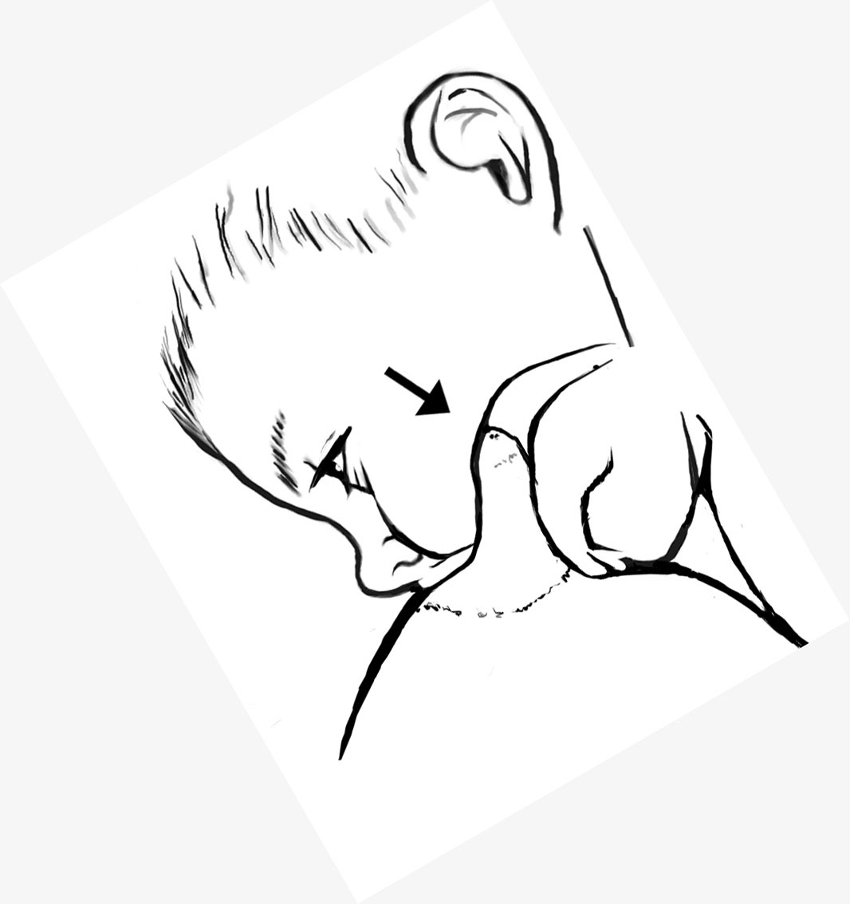
You can find it in your own mouth by running your tongue or finger along the roof (palate) of your mouth. Behind your front teeth are ridges. Behind these ridges is a smooth area, your hard palate. Closer to your throat, the roof of your mouth turns soft. The comfort zone is near the area in your baby’s mouth, where her palate turns soft.
Reaching the comfort zone during breastfeeding protects your nipple from friction and pressure, and your baby gets more milk with each suck.
With a shallow latch, your baby’s tongue compresses your nipple against her hard palate, causing nipple distortion and pain. You can see nipple distortion when your nipple emerges from your baby’s mouth oddly shaped. If your baby breastfeeds with a shallow latch feeding after feeding, you may develop cracks and bleeding.
How to latch deeper.
If you breastfeed sitting up or lying on your side, make sure baby’s body is pressed against yours (no gaps) and bring her chin into contact with your breast, either with a light, soft touch or a tapping movement. This contact between breast and chin should trigger a wide-open mouth. Once she opens wide, apply gentle pressure from behind her shoulders as she latches to gently push the breast deeper into her mouth. It may also help her reach the comfort zone if she approaches the breast off-center, as this allows the nipple to extend deeper than when it is centered. To do this, align baby with the breast so that her lower jaw is farther from the nipple than her upper jaw (see the picture below).
An even easier way to get a deeper latch is to use semi-reclined feeding positions, aka laid-back breastfeeding. To do this, lean back far enough so baby is completely supported tummy down on your body but upright enough that you can see her easily without straining your neck. The pictures show several variations.
You’ll know your nipple has reached the comfort zone when breastfeeding feels more comfortable than before. If you have nipple trauma, breastfeeding may not yet feel completely comfortable. But less pain indicates baby has a deeper latch. By getting your nipple into the comfort zone at every feeding, your nipples can heal even if you continue to breastfeed.
If you are still in pain even after trying to get a deeper latch, make sure you’re breaking the suction before taking baby off your breast. Also, if you’re pumping, make sure your pump is not causing your pain.
If neither of these is the cause, it’s time to seek skilled breastfeeding help. If someone tells you your latch looks “fine,” that doesn’t mean it is. How it feels is far more important than how it looks. To find a lactation consultant in your area, go to www.ilca.org, click on the “Find an LC” link, and enter your zip code.
Problem 25: Pumping hurts.
The two most common causes of pumping pain are: 1) pump suction set too high, and 2) poor fit.
Lower your pump suction
Don’t assume that higher pump suction yields more milk. Most milk comes only when a let-down, or milk release, happens.
Many factors affect milk release. Setting your pump suction too high can cause you to tense up, which can block milk release. Set your pump suction to the highest level that’s truly comfortable and no higher.
Check your pump fit
Fit refers to the size of the opening your nipple is drawn into during pumping, aka the nipple tunnel. Many mothers pump comfortably with the standard size that comes with their pump. But if pumping hurts even on low suction, you likely need a larger or smaller opening. A better-fitting nipple tunnel will feel more comfortable and may pump more milk.
If these strategies don’t work
Try soft pump inserts
Some women find the hard plastic of the pump uncomfortable. The Avent and Playtex pumps include a soft silicone insert. You can also buy soft inserts separately, such as the Avent Isis Petal Massager and the Ameda Flexishield Areola Stimulator. The Ameda product narrows your nipple tunnel to 21 mm, so don't get it if you need a large nipple tunnel.
Have your nipple and breast health checked
Pain during pumping can occur when your breasts or nipples are tender from other causes, such as nipple trauma, a nipple infection,, mastitis, or a circulatory problem. See your health care provide to rule these out.
What Are Vasospasm and Raynaud’s Phenomenon?
Vasospasm is caused by a constriction of the blood vessels in your nipples, reducing blood flow and causing pain. One possible cause is a shallow latch, which compresses your nipple against your baby’s hard palate. A deeper latch can prevent nipple compression. Treatments for vasospasm and Raynaud’s phenomenon may also help.
Raynaud’s phenomenon is a blood-flow problem that causes the arteries leading to fingers, toes, and nipples to constrict in response to its triggers, which include exposure to cold, compression, caffeine, and some prescribed drugs. People with Raynaud’s phenomenon often have a history of color changes and pain in their fingers or toes after exposure to these triggers. When the nipples are affected, after breastfeeding they may turn any combination of white, blue, and red. The blood flowing back to the nipple can cause a burning sensation, intense throbbing, or shooting pain.
Problem 17: I have a sore area or lump in my breast.
Mastitis means breast inflammation. It can be mild or severe, from the tender lump that goes away with one good breastfeeding to a hard, painful area in your breast and a high fever. Mastitis is also known as plugged ducts clogged ducts, blocked ducts, and breast infections. If you're running a fever of 101°F (38.4°C) or higher, contact your health care provider. The following strategies can help relieve this condition.
Take an anti-inflammatory medication
Over-the-counter ibuprofen is compatible with breastfeeding and relieves pain and inflammation. Ask your health care provider whether ibuprofen or another anti-inflammatory is a better choice for you.
Breastfeed or pump well and often
Your milk is safe for your baby, and letting your breasts stay full of milk can make mastitis worse.
Apply warm compresses and massage gently 3 times per day
Use wet or dry compresses or soak your breast in warm water. Breastfeed or pump right after applying heat. Massage the area with your palm and fingers in a circular motion, moving from armpit toward nipple.
Avoid tight clothes
If you can comfortably go without a bra, do so whenever possible.
Rest
When tired and stressed, your resistance to infection is lower. Rest to boost your body’s natural defenses. If mastitis recurs, give yourself extra downtime while you try to pinpoint the cause.
Find the cause to avoid recurrence
If these strategies don’t work
If your symptoms don’t improve within 2 days, you run a fever of 101°F (39°C) or higher, you have flu-like symptoms, or you see pus on your nipple or red streaks on your breast, contact your health care provider. You may need an antibiotic (which should be compatible with breastfeeding) or you may have another condition that requires treatment.
Possible Causes of Mastitis
To avoid getting mastitis again, try to determine the cause. The most common causes are:
• Nipple trauma, which lets bacteria into the breast
• A too-tight bra or anything that puts consistent pressure on your breast (sleeping on your stomach, baby carrier or purse strap)
• Prolonged breast fullness
Your breasts may become overly full if your baby breastfeeds irregularly, sleeps through the night, starts getting regular bottles and pacifiers, and during times you're really busy, such as holidays or family gatherings.
Breastfeeding and Pumping Strategies to Relieve Mastitis
When you have mastitis, breastfeed at least every 2 hours during the day and every 3 hours at night, starting with the sore breast. If the baby won’t feed that often, pump. Breast inflammation causes milk flow to slow. You'll probably notice lower milk production in your sore breast. (Your breasts make more milk than baby needs, so baby will still get plenty.) Position baby for breastfeeding with her nose or chin pointing toward the sore area. Make sure baby has a deep latch to help the milk drain more fully.
If baby won’t take the sore breast, pump as often as she would have been breastfeeding. Frequent breastfeeding or pumping will clear the mastitis more quickly and help boost your milk production back to where it was before the mastitis developed. You may see thickened milk or crystals in pumped milk. This is safe to feed the baby.
Problem 10: My nipples hurt between feedings.
The two most common causes of nipple pain between feedings are residual pain from nipple trauma and restricted blood flow to the nipple.
If you have broken skin on your nipple, try the following strategies:
Pain when your nipple changes color
If your nipples turn white when the pain starts, it may be caused by restricted blood flow to your nipples. This may be a temporary condition known as vasospasm, or you may have Raynaud’s phenomenon.
If you see nipple color changes (white, red, or blue) when the pain starts, there are several treatments that may help.
Other less common causes
If your nipples don't change color when the pain starts and you don't have nipple trauma, the cause may be referred pain. This happens when a painful injury or condition shares the same nerve pathways as your nipple, so that you perceive pain elsewhere as nipple pain. Mastitis can cause referred nipple pain (you would have a sore area or lump in your breast). Or it can be caused by a pulled muscle or fibromyalgia. Treatment for the underlying condition or pain medications can help.
Continuing pain is not normal. If the strategies in this section have not solved your problem, it’s time to get skilled help. To find a lactation consultant in your area, go to www.ilca.org, click on the “Find an LC” link, and enter your zip code.
Treatments for Vasospasm and Raynaud’s Phenomenon
When the pain starts, if you see no nipple color changes, then vasospasm or Raynaud’s phenomenon is probably not the cause. If you see color changes, the following treatments may help.
Massage or apply warmth to your nipples after breastfeeding
Quickly increase blood flow to the nipple by using gentle nipple massage right after baby comes off your breast. Or apply warm compresses or a heating pad to your nipples. Dress warmly, avoiding nipple exposure to air. Between feedings, wear thick nursing pads made from natural fibers.
Avoid exposure to cold and other triggers
For some mothers, staying warm and avoiding cold air is enough to prevent nipple pain. Try breastfeeding with a blanket wrapped around you. Avoid chemical triggers, such as caffeine, alcohol, nicotine, and prescription drugs, such as beta-blockers, oral contraceptives, and pseudoephedrine.
Get a deep latch
With a shallow latch, your baby’s tongue presses your nipple against his hard palate, causing nipple distortion and reducing blood flow. If you have Raynaud's phenomenon, a deeper latch may reduce pain. A deep latch may prevent vasospasm entirely. You’ll know your latch is deeper when your breast pain decreases or disappears. If your pain does not change, try the other strategies.
Take over-the-counter pain medication
An over-the-counter pain reliever, such as ibuprofen, should reduce the pain and is compatible with breastfeeding. Taking over-the-counter analgesics regularly for a while may keep you comfortable and prevent pain. Ask your health care provider to recommend one.
Ask about prescribed treatments
If you have Raynaud’s phenomenon, ask your health care provider about one of the most effective prescribed treatments, nifedipine. The recommended sustained-release dose of 30 to 60 mg per day is compatible with breastfeeding. For most mothers a 2-week course is long enough to relieve the pain completely. Some need to take it longer.
Problem 11: My nipples felt fine but now hurt during feedings.
There are several possible causes for this type of nipple pain. Take a look and see which might apply to you.
If baby is distracted and pulls during feedings, break the suction
As breastfeeding babies mature and begin to notice their surroundings, they may turn their heads to look around without releasing the nipple. Ouch! Regular nipple stretching can lead to pain. If this happens, be ready to break the suction. Slide your finger into the corner of baby's mouth between his gums until suction is broken and he releases your nipple. Then put him back on, latching as deeply as possible.
Go back to basics for a deeper latch
An older baby may breastfeed in acrobatic positions. If pulling on your nipple causes pain, let your baby know that he can only breastfeed if you’re comfortable. This might mean helping him get a deep latch or insisting baby stay in one spot without pulling. You might try breastfeeding in a darkened room without distractions. If baby stretches your nipple, break the suction with your finger to teach him it’s not okay.
Get checked for a yeast infection
One cause of nipple pain after a period of comfortable breastfeeding is a yeast infection known as candidiasis or thrush..
If a yeast infection is diagnosed by a health care provider, both you and your baby should be treated or you are likely to reinfect each other. You may also need to treat any other family members (including your partner) if they have symptoms.
Check for a nipple blister
This can be very painful, but treatment can relieve this condition..
Check for a white spot on your nipple (bleb)
If the white spot on your nipple is not painful, you're good to go. But if it hurts, there are treatments.
Consider other causes of sudden-onset nipple pain
Trauma caused by a breast pump. You may have a poor fit or have your pump suction set too high.
Products, such as alcohol, can irritate your nipple, as can washing too often or too vigorously.
Pregnancy causes hormonal changes that can make breastfeeding painful. Helping your baby get a deep latch may help.
Teething or biting can cause nipple pain.
Problem 12: My baby is biting me.
Many babies never bite, and those who bite once usually never bite again. But if biting is your problem, try the following strategies.
Use cold to numb baby’s gums before breastfeeding
Try a cold, wet washcloth or a refrigerated teething toy. If baby has started solid foods, try frozen peas. Over-the-counter teething preparations may numb baby’s tongue (and your breast!), making breastfeeding difficult.
Use strategies that discourage biting
Try to stay calm. Pulling baby off the breast with her teeth clamped down can cause more damage than the bite itself. The following strategies may help discourage a persistent biter.
• Stop the feeding. Remove the temptation for baby to make you jump.
• Offer something else to bite on, such as a teething ring or toy.
• Set baby quickly on the floor, so biting brings negative consequences. After a few seconds of distress, comfort her.
• Keep a finger near baby’s mouth, ready to break the suction if she turns away and pulls on your nipple. If you respond consistently, baby will learn quickly that turning away means losing the nipple.
• Make sure baby latches deeply, which lessens the odds of biting.
Use strategies to reduce your discomfort
While experimenting with strategies to discourage bearing down or biting, try the following to reduce your pain.
• Take ibuprofen (which also reduces inflammation) or another analgesia that your health care provider recommends.
• Offer your less-sore breast first, and then switch to the other after your milk is flowing.
• Try varying feeding positions so one area is not consistently hurt.
• Use ultrapurified lanolin or hydrogel pads to reduce pain.
Strategies for the persistent biter
If your baby continues to bite, try the following tips:
• Give baby your complete attention during breastfeeding. Eye contact, stroking, and talking decrease the odds that she will bite for attention.
• Learn to recognize the signs that baby is losing interest in breastfeeding, when most biting occurs.
• Don’t pressure a disinterested baby to breastfeed. Try again later.
• Remove a sleeping baby by breaking the suction.
• Keep your milk production abundant. Some babies bite when there’s very little milk.
• Note behaviors that lead to biting. Some babies bite when teased or when you raise your voice.
• Keep breastfeeding relaxed and positive.
• Praise baby when she doesn’t bite. Say “Thank you” or “good baby” when she is gentle. Give smiles, hugs, kisses.
Babies don’t understand that biting causes pain. Breastfeeding teaches your baby to associate you with feelings of security, comfort, and relief from hunger. When these positive associations are disrupted by biting, she should learn quickly not to do it again.
Recommended Treatments for a White Spot on the Nipple (Bleb)
If your bleb doesn’t hurt, you don’t need to treat it. If it hurts, before breastfeeding apply wet heat to thin the skin. Soak your nipple in water by lying on your side in a warm tub or applying warm, moist compresses. If this doesn’t help, soften the skin between feedings by putting some olive oil on a cotton ball and wearing it in your bra against the bleb. Then peel off any thickened skin and manually express the plug.
If this doesn't bring relief, see your health care provider, who can open the bleb. If it is dry, another option is to apply a thin layer of a prescribed steroid ointment to the bleb several times each day for a few days.
If your white spot developed after your baby bit you, it may be caused by saliva and milk moisture under the skin edges. In this case, treat it like any bite wound by it washing gently with soap and water.
Nipple Blister Causes and Treatments
A blister may form on the face of your nipple if baby is breastfeeding shallowly and putting pressure on its tip. Helping baby latch deeper may reduce the pain and prevent the blister from recurring.
If the blister is very painful, opening it may relieve the pain. To open a blister, apply warm, wet compresses before breastfeeding. The moisture will soften the blister and the heat will thin the skin, which may cause the blister to open. If not, ask your health care provider to open it.
To prevent infection in an opened blister, wash it in the shower at least once a day with soap and water. To prevent infection, check with your health care provider about applying a thin coat of the over-the-counter antibiotic ointment Polysporin after breastfeeding. If it is applied sparingly, it does not need to be rinsed off before the next feeding.
Recommended Treatments for a Yeast Infection
If you’ve been diagnosed with a nipple yeast infection, antifungal treatment options include nystatin cream or ointment (much less effective than other options); gentian violet (a 0.5% or 1% solution applied to your nipples with a cotton swab once per day for 4 to7 days); over-the-counter creams such as clotrimazole (Mycelex, Lotrimin, Lotrimin AF cream or lotion [1%]), miconazole (Micatin, Monistat-Derm cream or lotion [2%]), and ketoconazole (Nizoral); and nystatin with triamcinolone. These don't have to be wiped off before feeding.
If your baby has a yeast infection, treatment options include nystatin suspension (less effective than other options) swabbed in baby’s mouth 4 to 8 times per day, gentian violet (a 0.5% or 1.0% solution either swabbed in baby’s mouth or applied to your nipples followed by breastfeeding once or twice a day for 4 to 7 days), oral clotrimazole, and oral fluconazole. Ointments may be recommended for a diaper rash.
With a mild case, you may feel relief after 1 to 2 days of treatment. With more severe cases, it can take 3 to 5 days. If you take fluconazole, it may take a week or more for the pain to disappear. Be sure to do the full course of treatment.
Yeast Infection and Its Symptoms
A yeast infection is an overgrowth of yeast, which thrives in moist, dark places, such as on the nipples, in the mouth, and in the baby’s diaper area. It normally lives in our bodies in balance with other organisms, but illness, pregnancy, antibiotic use, and other factors can throw the body out of balance and cause an unhealthy overgrowth. A yeast infection may also be passed to you from your baby.
Your symptoms
Shooting pains in your breasts between feedings are unlikely to be caused by a yeast infection if that is your only symptom. With breast pain alone, a bacterial infection is 3 times more likely. But a yeast infection is a possible cause if you have these symptoms together:
• Shiny skin on and around your nipple along with breast pain.
• Flaky skin on and around your nipple along with breast pain.
• Nipples that are itchy along with breast pain.
Your baby’s symptoms
Your baby may or may not have the following symptoms:
• White patches on her gums, cheeks, palate, tonsils, and/or tongue (if wiped off, they may look red or bleed).
• Diaper rash (may be simply red or red with raised dots).
Most breastfed babies have a white, milky coating on their tongue. This is not a sign of a yeast infection unless white patches spread to her cheeks and gums. Some babies can have a yeast rash on their bottom but not in their mouth.
Few challenges are more upsetting to both mother and baby than latching struggles. Many mothers in this situation simply give up in despair. But thanks to recent research, we have new strategies that can help your baby settle more easily at breast.
-
Latching is a struggle for my newborn.
-
Baby won't take one breast at all.
-
Baby was nursing and now refuses to breastfeed.
3 - Latching
Problem 13: Latching is a struggle for my newborn.
Just like other mammals, our babies are born with feeding reflexes that help them get to the breast and feed. Knowing how these reflexes work can help you avoid and solve many latching problems.
Your baby's feeding reflexes work best when you’re leaning back and baby rests tummy down on your body. However, until recently, most mothers were taught to breastfeed sitting up straight, which we now know can complicate early breastfeeding.
Leaning back to breastfeed can short-circuit many breastfeeding battles, because gravity works with your baby’s reflexes to help him latch deeply and settle quickly.
Laid-back positions are usually easier during the early weeks, but that’s not true for everyone. You might prefer other positions some of the time. Or maybe breastfeeding goes more smoothly for you in upright or side-lying positions. To use these positions with the fewest struggles, you also need to know how your baby’s feeding reflexes can work for you.
Another way to reduce latching struggles is to shape the breast as baby latches to help him get on deeper. Two techniques to try are the breast sandwich and nipple tilting.
Breast firmness and fullness can also contribute to laching struggles. When this happens, reverse pressure softening can help by moving the swelling away from the nipple for an easier latch.
If these strategies don’t lead to settled breastfeeding, it’s time to get skilled breastfeeding help. To find a lactation consultant in your area, go to www.ilca.org, click on the “Find an LC” link, and enter your zip code.
If your baby has struggled to latch since birth, your struggles may be related to one of the less-common problems described at this link.
Less Common Causes of Latching Struggles
If your baby has never breastfed well, your struggles may be related to one or more of the less common baby and mother issues below.
Baby issues
These include anatomy, prematurity, and health. Most anatomy issues concern baby’s mouth and tongue, but some involve baby’s breathing. Many premature babies can feed effectively after lots of breastfeeding practice. But until they get this, they may have difficulty. If a baby was born early, is ill, or has health or neurological problems, breastfeeding may take some time and practice to work well.
Mother issues
Problems related to nipple, breast, and milk production are covered elsewhere. If your anatomy, health, or milk production are contributing to latching problems, it is time to get skilled breastfeeding help.
A breastfeeding professional can help you rule in or out possible causes and discuss next steps. Babies are hardwired to breastfeed, so there is always a reason for a latching problem. To find a lactation consultant in your area, go to www.ilca.org, click on the “Find an LC” link, and enter your zip code.
Use Reverse Pressure Softening If Your Breasts Feel Firm
When the dark circle around your nipple (areola) feels firm rather than soft, this can lead to latching struggles or a shallow latch. Reverse pressure softening (RPS) is an easy way to make the areola very supple right before feedings. All you need to do RPS is your hands.
RPS should not cause discomfort and should not be used if you have a sore breast from mastitis.
To do RPS follow these tips:
• Look at Figures 1 through 6 and choose whichever way seems easiest.
• Lie back while doing RPS, so gravity helps move the swelling back.
• Gently press inward toward your heart, firmly and steadily, counting slowly to 50. Count very slowly if you’re very swollen.
• If you have long fingernails, see Figure 1 or ask for help (Figure 5).
• Until the swelling is gone, which may take a few days, use RPS to soften the areola before feeding or pumping.
Keep any pumping sessions short, resoftening the area with RPS as needed. Use medium or low suction settings to prevent return of swelling.
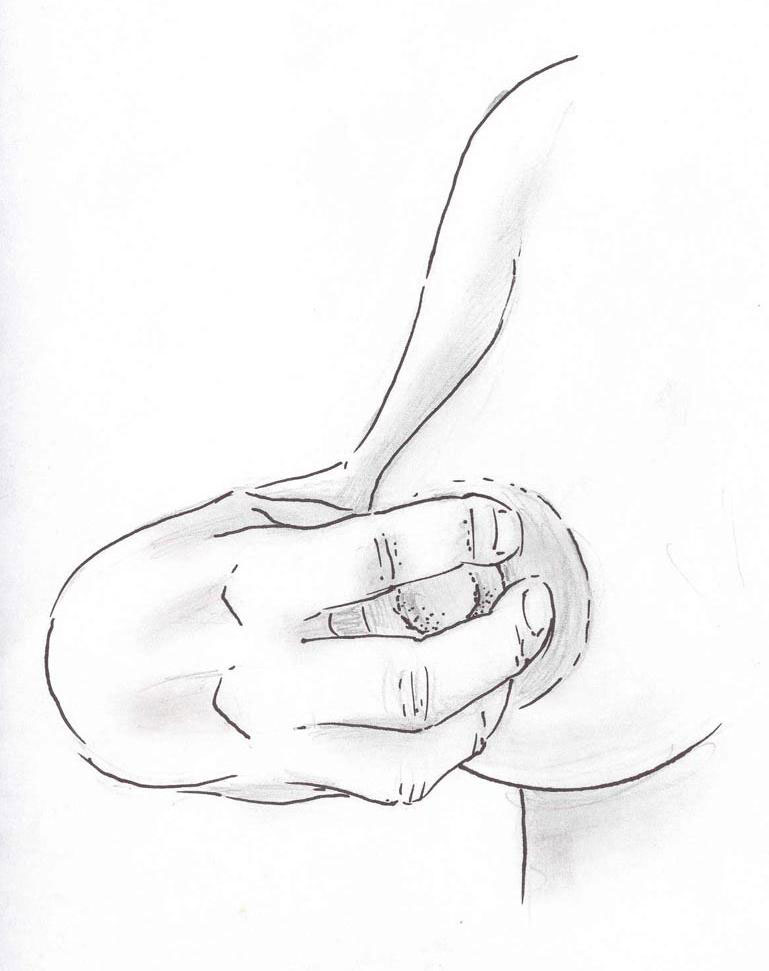
Figure 1
One-handed “flower hold”: If you have short fingernails, place your curved fingertips where baby’s tongue will go. Apply pressure toward your heart.
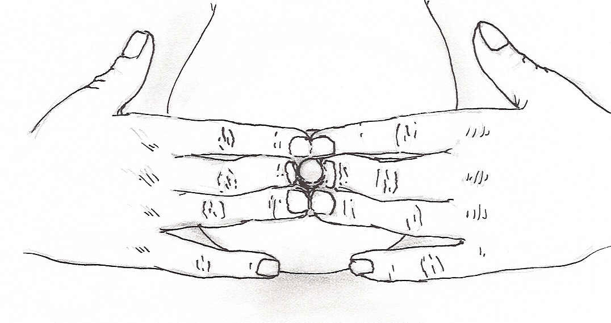
Figure 2
Two-handed, one-step method: If you have short fingernails, place hands on the breast so that your curved index, middle, and ring fingertips are touching the nipple. Apply pressure toward your heart.
Figure 3
If you need help, ask someone to put his or her fingers or thumbs on top of yours.
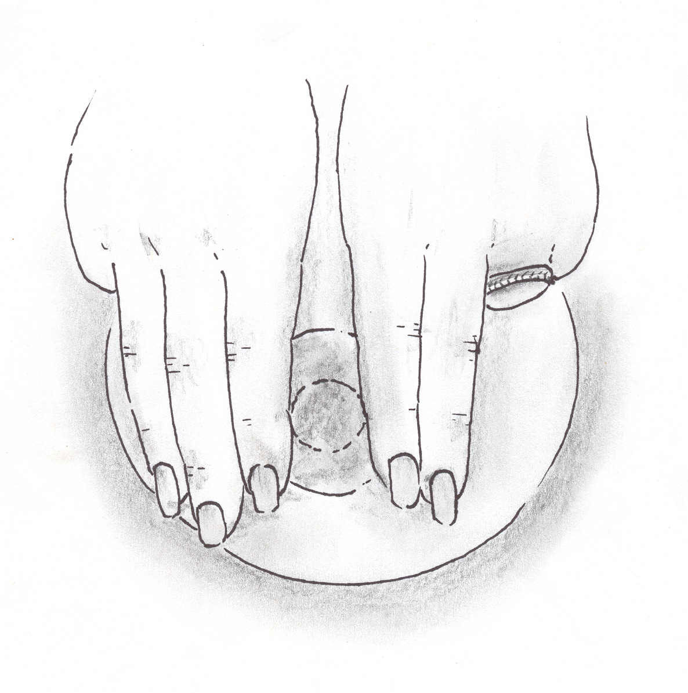
Figure 4
Two-step method, two hands: Place two or three straight fingers on each side of the nipple and make knuckles with your remaining fingers. Apply pressure toward your heart. Make a one-quarter turn and repeat until a full circle is made around the nipple.

Figure 5
Two-step method, two hands: Use straight thumbs on the areola so that the base of the thumbnails align with the nipple. Apply pressure toward your heart. Make a one-quarter turn and repeat until a full circle is made around the nipple.

Figure 6
Soft-ring method: Cut off the bottom half of an artificial nipple and place it on the areola. Apply pressure toward your heart with fingers.
Illustrations ©2012 Kyle Cotterman, used with permission. Reverse pressure softening technique by K. Jean Cotterman, RNC-E, IBCLC
Laid-back Breastfeeding Can Make Latching Easier
As UK researcher Suzanne Colson (who coined the term "laid-back breastfeeding") discovered, leaning back to breastfeed can short-circuit many breastfeeding battles. Gravity keeps you and your baby in full frontal contact without effort. Gravity also works in harmony with your baby’s reflexes to help him get on the breast deeply, which helps him settle quickly.
When using or semi-reclined, or laid-back, feeding positions, lean back far enough so that your baby’s body rests comfortably tummy down on top of you but upright enough so that you can see him easily without straining your neck. While leaning back, make sure your head, neck, shoulders, arms, and legs are all well supported. Think about how you sit or lie back at home when you watch a movie or a television show.
In semi-reclined positions, gravity helps your baby’s reflexes in the way nature intended. Experiment to find the positions that work best for you. Think of you and your baby as two puzzle pieces. Use the following simple adjustments until you find your own best fit:
1. Adjust how far you’re leaning back until you find a good angle for you. Some mothers prefer their head and shoulders higher or lower.
2. Adjust the direction your baby lies on your body. Put baby lengthwise, diagonally, or across your torso until you find a position that works.
These two dynamics will help you find your own best variations. If you’ve had a cesarean, know that your baby doesn’t have to rest on your incision. The pictures below show some of the many laid-back options.
In any position, make sure your baby’s feet are touching you or something soft nearby. Foot contact triggers some of baby’s feeding reflexes and, if missing, can cause latching struggles.
Although your baby can get to the breast without help in these positions, feel free to help him in any way that feels right to you. If his nose seems blocked after latching, you can make an airway for him by pressing on the breast with your fingers.
How Upright Breastfeeding Positions Complicate Early Breastfeeding
When you sit up to breastfeed, gravity pulls baby down and away from you. Baby knows how to latch when her entire front—face, torso, arms, legs, feet—are touching you. But any gaps between you can disorient and frustrate her. In these positions, gravity can turn the same reflexes that are supposed to help your baby get to the breast into major hurdles to feeding. Rather than moving her toward the breast, her arms flail and legs kick. Head-bobbing may propel her away from your breast. Baby wants to latch, but it's not easy when fighting gravity.
From your perspective, after giving birth vaginally, sitting up straight puts pressure on a very tender area. Also, to keep baby pressed against you at breast height, you must either find a feeding pillow that’s just the right thickness or hold her in your arms for long stretches, which can be tiring. Because gravity makes it harder for baby to take an active a role in latching, you must do most of the latching work yourself. And with gravity working against you, it may feel as though there are just too many moving parts to manage.
Problem 14: Baby won't take one breast at all.
If your newborn takes only one breast, most likely it is because one nipple protrudes more, is a different size, or has a different texture. Or one breast may be easier for your baby because it is more or less firm.
If your nipple shape, size, or texture is the problem, don’t panic! Your baby will latch more easily within a few days or weeks. Babies’ mouths grow quickly, and their coordination improves over time.
Your baby may refuse one breast if you have mastitis, because it can change the milk's taste and slow its flow. With mastitis, you’ll have a sore area in your breast. If your baby was breastfeeding well then refuses one breast, see your health care provider to rule out a medical cause.
It is not always obvious why your baby prefers one breast. But know that babies can get enough milk from one breast alone. (Moms have exclusively breastfed twins, triplets, even quadruplets!) But if you want your baby to take both breasts, these strategies may help.
If these tips don't help, remember that most babies can get all the milk they need from one breast. Even if your breasts look a little lopsided for a while, after weaning they will return to their pre-pregnancy size.
Address Differences in Milk Flow
If you think your baby may be resisting one breast because it has a slower flow, try stimulating milk flow on that side with hand expression or pumping before offering it. If your baby resists your breast with the faster flow, trying breastfeeding in a laid-back feeding position, with her head higher than your breast, so gravity will give her more control over flow.
Ensure Good Milk Production in the Unused Breast
Safeguard your milk production in the unused breast by pumping milk from it at least 6 times per day. Good milk flow can make the transition to taking both breasts easier for your baby. Most mothers do not produce milk evenly on both sides. What matters to your baby is his overall milk intake, not how much milk he gets from each breast.
Adjust Your Feeding Position and When and Where You Breastfeed
To rule out a basic latching problem, first try semi-reclined, laid-back breastfeeding positions, work with baby’s feeding reflexes, and try breast-shaping techniques. If your breast is very firm, try reverse pressure softening.
If baby still refuses one breast:
• Use your dominant hand or arm to help your baby latch.
• Offer the difficult breast when baby is in a light sleep and less aware.
• For the baby older than 3 months, breastfeed in a darkened room or move her to the refused breast while walking or rocking.
• Try the slide-over position.
To do the slide-over position, start by positioning baby at the breast she’ll accept. When you hear baby swallowing, keep her body position exactly the same, and with her head pointed in the same direction, simply slide her over to the other breast in this same position.
Problem 15: Baby was nursing and now refuses to breastfeed.
If your baby breastfed well for months then suddenly seemed to lose interest, could this be baby’s way of weaning? Not likely if he's younger than 12 months, as until 1 year baby has a physical need for mother’s milk. If he's not happy about this change, this is another sign he's not ready to wean. Sudden breast refusal--aka a "nursing strike"--usually lasts 2 to 4 days but may last as long as 10 days. There are many ways to help your baby return to breastfeeding.
The first thing to do if your baby completely refuses your breast is to express your milk and feed your baby.
Express your milk as often as baby was breastfeeding
This avoids uncomfortable breast fullness and maintains your milk supply. If your baby isn’t nursing at all, a double electric breast pump may make this faster and easier.
Feed baby your milk in ways that don’t involve sucking
A sippy cup is a good choice for a baby older than 6 to 8 months. A cup does not satisfy baby’s sucking urge like a bottle, which may help end the strike sooner. A younger baby can drink your milk from a shot glass, spoon, or even an eyedropper. If your baby has been taking a pacifier regularly, consider giving it a rest until the strike is over.
Why do babies who nursed well for so long suddenly refuse the breast? Before deciding on strategies, it can help to determine the cause.
It's stressful when baby refuses the breast, but it is almost always possible to return to breastfeeding. You just need to know how to reduce the stress and overcome the strike.
If these strategies don’t lead to settled breastfeeding, it’s time to get skilled help. To find a lactation consultant in your area, go to www.ilca.org, click on the “Find an LC” link, and enter your zip code.
Breastfeeding is the biological norm for mothers and babies. With time, patience, and skilled help you can make breastfeeding work again.
Strategies for Overcoming a Nursing Strike
Try these strategies to help your baby return to settled breastfeeding.
Keep time at the breast pleasant
Don't let the breast become a battleground. If trying to breastfeed is upsetting your baby, feed another way and save the breast for happy cuddle time. When baby’s near the breast, make time there emotionally rewarding. Make feeding time away from the breast emotionally neutral. Rest your sleeping baby against your breast during naps to help shorten the strike.
Spend time touching and in skin-to-skin contact
When not feeding, hold your baby with her bare torso against your skin, and spend as much time that way as possible. If it is chilly, throw a blanket over both of you. Take a bath with your baby. Use a sling or baby carrier.
Offer the breast while baby is in a light sleep or is drowsy
Many babies accept the breast again for the first time while asleep or in a relaxed, sleepy state. Try breastfeeding while baby naps. Use feeding positions baby likes best and experiment, starting first with laid-back positions to make the most of your baby’s feeding reflexes. Have your baby nap on your breast when you’re in a semi-reclined position.
Get the milk flowing right away
Before offering your breast, hand-express a little milk onto baby’s lips. If baby takes your breast, but won’t stay there, ask a helper to drip expressed milk on the breast with a spoon or eyedropper. Swallowing your milk triggers suckling, which triggers swallowing. If baby comes off the breast, offer more expressed milk and try again.
Try breast shaping and breastfeeding in motion
Some babies accept the breast only while being walked or rocked. Shaping the breast so that it’s easier to latch may help baby take the breast deeper and trigger active suckling.
Try breastfeeding when baby’s not too hungry
Baby needs to feel calm and open to breastfeeding rather than hungry and stressed. If she's agitated, calm her and feed her more often than usual. Try feeding her 1/3 to 1/2 of her usual feeding, just to take the edge off her hunger before offering your breast.
Breastfeed as much as possible when it’s working
When baby accepts the breast, breastfeed as long as she will suckle. Offer the breast again soon, rather than waiting for a long stretch. Make the most of those times that breastfeeding is going well.
Try “bait and switch”
If your baby takes a bottle but not the breast, bottlefeed in a breastfeeding position and while baby is actively sucking and swallowing, pull out the bottle nipple and insert yours. She may just keep suckling.
Use breastfeeding tools
When used with the guidance of a lactation professional, these products may help you turn the corner.
Silicone nipple shield
Available in most baby stores and online, the 24 mm size is the best fit for a baby older than 1 month.
At-breast supplementer
This device provides milk at the breast through a thin tube that attaches to a container. If slow milk flow is an issue, this may help your baby accept the breast. If slow flow is not the issue, it may not be a good choice.
What Causes a Nursing Strike?
Before trying strategies for overcoming a nursing strike, first consider possible causes.
Physical causes
• Ear infection, cold, or other illness
• Reflux disease, which causes painful feedings
• Oversupply or a fast, overwhelming flow
• Allergy or sensitivity to a food or drug you consumed
• Pain when held after an injury or medical procedure
• Mouth pain from teething, thrush, or a mouth injury
• Reaction to a product such as deodorant, lotion, or laundry detergent
Environmental causes
• Stress, upset, or overstimulation
• Feeding on a strict schedule, timed feedings, or regular interruptions
• Baby left to cry for long periods
• Major change in routine: traveling, a move, or returning to work
• Yelling during breastfeeding
• A strong negative reaction when baby bites
• An unusually long separation from you
Having an idea of the cause of the breast refusal may make it easier to choose a strategy. If your baby has an ear infection, the right medical treatment may be the best solution. If the cause is a change in baby's environment or routine, try to re-create the setting he was used to as much as feasible, and give it time.
Breast pain during the first week after birth is most often caused by engorgement, which prompt treatment can quickly clear. Breast pain at other times is most often due to mastitis, aka a plugged duct or breast infection. Other infections and circulatory problems can also cause breast pain. Find out what you need to know so that your pain can be relieved and you can breastfeed in comfort.
-
My breasts are engorged during the first week.
-
I have a sore area or lump in my breast.
-
I have shooting pains in my breasts between feedings.
4 - Breast Pain
Problem 16: My breasts are engorged during the first week.
After birth, engorgement may occur when blood, lymph, and milk converge in your breasts. IV fluids you're given during labor can contribute to it, too. So can infrequent or ineffective feedings. With the treatments below, engorgement should subside within a day or two. If you have a fever above 100.6°F (38.4°C) or flu-like symptoms, contact your health care provider.
Take an anti-inflammatory medication
Over-the-counter ibuprofen is compatible with breastfeeding, effectively treats engorgement, and relieves pain. Ask your health care provider whether ibuprofen or another anti-inflammatory is a better choice for you.
Remove your milk well and often
Are you worried that more breastfeeding or pumping will make your engorgement worse by increasing your milk supply? Actually it helps relieve breast congestion faster by allowing the extra blood and lymph in your breasts to drain more easily. Try these tips.
• Breastfeed at least 8 to 12 times each day (more is even better)
Breastfeed at least every 1.5 to 2 hours during the day and every 2 to 3 hours at night until the engorgement is gone. Make sure your baby has a deep latch. If she pauses often, try breast compression.
• Avoid bottles and pacifiers
Offer your baby your breast whenever she wants to suck. A pacifier delays feedings, making engorgement worse.
• Express your milk
Try reverse pressure softening
This is an easy way to make the area around your nipple very soft right before feeding or pumping for more effective milk removal.
Apply cold or warmth to your breasts
Warmth before feeding may help milk flow, but it also increases inflammation so don’t overdo it. Cold reduces inflammation. Between feedings, apply bags of frozen veggies wrapped in a towel to your breasts for 15 to 20 minutes.
Wear a supportive bra
Use comfort as your guide. If it feels good, wear a bra at night. Avoid bras that are too tight or don't fit well.
If these strategies don’t work
Try green cabbage leaves. Rinse room-temperature or chilled leaves, crush the large vein with your hands or a rolling pin, and cut a hole for your nipple. Apply leaves to breasts and wear them in your bra. After 2-4 hours, remove and apply fresh leaves. You'll know within a day if it's helping.
Other breast conditions may be mistaken for engorgement. If your symptoms don’t improve with treatment, see your health care provider.
Pumping Strategies to Relieve Engorgement
If your baby is breastfeeding well but doesn't completely relieve your breast fullness, use an effective breast pump just once to drain the milk from both breasts as fully as possible. This may help you turn the corner.
If your engorgement comes and goes or is mild or moderate, another strategy is "pump to comfort." To do this, pump just long enough to relieve your breast discomfort and no more. Pump only when you feel full and baby does not relieve this fullness.
If your baby is not yet breastfeeding well or at all, pump to relieve engorgement and feed your baby your milk until latching gets easier. Pump at least every 1.5 to 2 hours during the day and at least every 2 to 3 hours at night until your engorgement subsides.
Problem 18: I have shooting pains in my breasts between feedings.
Ouch! To determine the cause of your shooting pains, look at your nipples when the pain starts for either trauma or a change in color.
Check your nipples for changes in color when the pain begins
If your nipples turn white, this pain may be from restricted blood flow caused by a temporary condition known as vasospasm, or you may have Raynaud’s phenomenon.
If your nipples turn white, red, or blue when the pain starts, you may find relief with home treatments for vasospasm or Rayaud's phenomenon. Or you may need to see your health care provider for prescribed treatments.
Rule out referred pain
Referred pain is pain from an injury that travels along the nerve pathways and is felt in another area. Pain from nipple trauma may be felt as breast pain. Although perceived as breast pain, its cause is nipple damage. If the pain stops after your nipples heal, you'll know this was the cause.
Rule out a bacterial infection
Bacterial and fungal infections have some symptoms in common, but a bacterial infection is much more likely. If your nipple trauma heals very slowly, healing has stopped, or your nipple or breast pain gets worse despite efforts to correct its cause, you most likely have a nipple bacterial infection. You may also see pus or a yellow scab on your nipples.
Rule out a yeast infection
All the symptoms previously described for a bacterial infection, except the pus and yellow scab, could occur with a yeast infection.
If your health care provider diagnoses a yeast infection, you need treatment.
If these strategies don’t work
If you haven’t relieved your pain with the tips in this section, it’s time to seek skilled help. To find a board-certified lactation consultant in your local area, go to www.ilca.org, click on the Find a Lactation Consultant link, and enter your zip code.
Less Common Causes of Breast Pain
In addition to the common causes of breast pain covered in this section, there are also less common causes to consider.
• Have you set your pump suction too high? A pump suction that is too strong may cause temporary breast damage that can lead to pain.
• Could you have mastitis?
• Does the breast pain start a minute or so into the feeding when baby starts gulping? A very strong milk ejection (let-down) reflex can sometimes cause breast pain. This usually decreases and disappears during the first month of breastfeeding.
• Do you lean over your baby in uncomfortable positions to breastfeed? If so, try pillows or laid-back positions for better support.
• Does breast pain occur only during the days before your period? If so, it may be related to hormonal changes and fade after menstruation starts. If you have fibrocystic breast changes, eliminating caffeine may help.
• Are your breasts very large? Large, heavy breasts can pull on the connective tissues above the breast. You may feel tenderness where the breasts join the chest wall when you apply gentle pressure above your breasts. A different style or better-fitting bra may help relieve this pain.
• Pain from internal scarring from breast surgery or injury. If the pain is severe, you can exclusively breastfeed from the other breast and avoid the painful one.
• Pain from a ruptured breast implant. In this case, you may see changes in breast shape or skin changes. See your health care provider.
• Pain from a milk-filled cyst called a galactocele. With this harmless condition, you will usually feel an obvious lump in that breast.
Treatments for a Bacterial Nipple Infection
If you are diagnosed with a bacterial infection of your nipple, your health care provider may prescribe topical mupirocin (Bactroban) ointment to apply sparingly after feedings. One study found that at most only about 1/3 of nipple bacterial infections improve when treated with ointments.
The most effective treatment for a nipple bacterial infection is oral antibiotics, which also prevent mastitis, a common complication of nipple damage. Oral cloxacillin or erythromycin (for those allergic to penicillin) taken in 500-mg doses every 6 hours for 10 days resolves nipple bacterial infection in nearly 80% of women, and this treatment is compatible with breastfeeding. In unusual cases, long-term antibiotic treatment may be necessary.
Lack of sleep and fatigue are a normal part of early parenthood, no matter how a baby is fed. This section includes realistic expectations and strategies to help you get the most rest possible.
-
I'm exhausted from my newborn's night feedings.
-
My newborn has day and night mixed up.
-
My older baby wakes often at night.
5 - Night Feedings
Problem 19: I'm exhausted from my newborn's night feedings.
Fatigue is a normal part of new parenthood. This is partly because most babies are born with their days and nights mixed up. And this mix-up puts their feeding frenzies right in midst of the wee hours.
Should you wake your baby if he sleeps longer than 3 hours?
This is important to know so you don't set your alarm unnecessarily. Once you confirm your newborn is gaining weight well (about 1 oz [30 g] per day), you don’t need to wake him if he sleeps longer than 3 hours. One 4- to 5-hour sleep stretch per day is fine, and if you’re lucky enough to have a newborn who sleeps this long, enjoy!
Nap while baby sleeps
You just had a baby, and you need to adjust and recover. When your baby is active at night, nap during the day. What counts is your cumulative hours of sleep. To make napping easier, accept all offers of help. Resist the temptation to get chores done instead.
Keep baby nearby at night
The less you have to move around at night to breastfeed, the easier it is to get back to sleep. Also, the American Academy of Pediatrics recommends babies sleep in their parents’ room for the first 6 months to prevent SIDS. There are many safe sleep options from which to choose.
Learn to breastfeed lying down
No mother should have to choose between getting her rest and feeding her baby. Breastfeeding lying down allows you to sleep and feed at the same time. This gets easier with practice.
Formula likely won’t mean more sleep
It may seem logical that you’ll get more sleep if someone else feeds the baby at night. But science tells us that mothers who breastfeed around the clock get about 45 minutes more sleep, spend more time in deeper sleep, and feel less tired than mixed-feeding or formula-feeding mothers.
If these strategies don’t work
Don’t despair. As your baby matures, his sleep patterns will change and you will get more sleep. In the meantime, try different sleeping arrangements to find those that make nighttime breastfeeding easier..
How to Breastfeed Lying Down
While learning to breastfeed lying down, practice during your normal waking hours. Start at a time you feel awake and alert.
Your own best way of breastfeeding lying down may be unique and will depend on your body type. Be open to experimenting.
Begin with the “V” approach below and consider this a starting point.
1. Have handy 2 or more pillows and a hand towel or baby blanket
2. Lie on your side, facing your baby, with a pillow under your head.
3. Put the other pillow behind your back.
4. Lay your baby completely on his side facing you, and align his body with yours so he is nose to nipple.
5. Pull his feet in close to you so your bodies form a V, which may be narrow or wide, depending on your breast size (see Figure 1).
6. Lean back into the pillow until your nipple lifts off the bed at your baby’s mouth level.
7. Put your upper hand behind your baby’s shoulders and pull him gently toward you, brushing or tapping his chin lightly against the breast until he opens wide.
8. Quickly move him onto the breast from behind his shoulders to get a deep latch.
9. Press his shoulders tightly against you as he latches on.
10. Wedge the rolled-up towel or baby blanket behind his back to keep him in place, leaving his head free to angle back.
Figure 1. This mom and baby form a very narrow “V.”
With the V approach, your baby’s head rests on the bed, but if you prefer, baby’s head can rest on your arm and you can use that arm to bring baby onto the breast (Figure 2).
Figure 2. This mom supports her baby’s head on her arm.
There are also other ways. Mothers of twins often breastfeed at night resting on pillows propped up behind them, tucking a baby under each arm (see Figure 3).
Figure 3. One way to breastfeed twins while lying down is with pillows for support.
When switching breasts, you have choices. You can pull your baby against your body, hold him against you while you roll over, and begin again on the other side. Or you can keep him where he is and lean over to feed from the upper breast (see Figure 4). Breastfeeding lying down is worth practicing until you can do it in your sleep.
Figure 4. This mom props her baby on her arm to feed her from the upper breast.
Safe Nighttime Sleep Options
Every family develops its own nighttime variations that work for them, so feel free to experiment with these possibilities:
• Baby sleeps in a bassinet next to your bed.
• Baby sleeps in a sidecar bed attached to yours.
• Baby sleeps in a crib with the side next to your bed removed and the crib pushed against your bed for easy access.
• Baby sleeps in a crib elsewhere in your room.
• Baby sleeps in your bed (using the safe sleep guidelines below) for all or part of the night.
• Baby (or you and baby together) sleep on a mattress (or a pallet, a sleeping bag, etc.) on the floor in your room.
The following safe and unsafe sleeping practices are adapted from the guidelines of the Academy of Breastfeeding Medicine (www.bfmed.org).
Safe sleeping practices for any location
• Put baby on his back to sleep.
• Use a firm, flat surface, such as a firm mattress on the floor away from walls or a co-sleeping baby bed (sidecar) or crib that can attach to an adult bed.
• Tuck in any blankets around the mattress to avoid covering baby’s head.
• Dress baby in a warm sleeper if the room is cold.
• Keep baby in your room at night for the firs 6 months.
Unsafe sleeping practices
• Don’t expose baby to smoke, either from you or secondhand smoke from others. Baby should not bedshare with a smoker.
• Don’t sleep with baby on a sofa, couch, daybed, or waterbed, or with pillows, stuffed toys, or loose bedding near baby.
• Don’t bedshare if impaired by alcohol, sedatives, or other drugs.
• Don’t sleep in a bed with an adjacent space where baby could fall or that could trap baby.
If you sleep in a standard American adult bed, products are available such as guard rails and bolsters that can prevent falls and make your bed safe for your baby. Or you can push your bed against a wall. About 80% to 90% of parents sleep with their baby some of the time, so as a precaution, make your bed safe for your baby. Even if you don't intend for you and your baby to fall asleep there, breastfeeding releases hormones that relax you, so it may happen.
Problem 21: My older baby wakes often at night.
To begin, it may help to know if your baby needs milk at night.
Does your baby need to breastfeed at night?
Due to differences in mothers’ breast storage capacity, early on some thriving breastfed babies sleep for long stretches at night, while others need to breastfeed at night even at 6 months, 8 months, and beyond.
Sleep norms vary by breast and bottle
If you have a wakeful breastfeeding baby, it’s important to know if your sleep expectations are reasonable. What you hear about “normal” infant sleep may be based on formula-fed babies sleeping in their own rooms.
Know why babies wake other than hunger
As babies grow, there are many reasons they wake at night and want comfort, even when they’re not hungry.
Reconsider your focus
Consider strategies for getting more sleep that respect both your need for rest and your baby’s need for milk. If your baby’s night feedings are more of a want than a need, and you want to make changes, consider strategies that are gradual and kind.
Adjust your sleeping arrangements
Night feedings will be less disruptive if your baby sleeps nearby.
Rather than trying to make your baby sleep longer, which may not be practical, focus instead on what you can control.
Create a bedtime routine
In her must-have No-Cry Sleep Solution book, Elizabeth Pantley explains how to create a peaceful bedtime routine for a toddler so he can relax before sleeping. She also suggests keeping a child’s environment the same when he awakens in the night as when going to sleep.
Make changes gradually
This may mean moving your child’s crib gradually farther and farther away from your bed or sleeping with your child on a mattress on the floor in his room for a while before he sleeps there by himself. Take baby steps. If your first strategy isn’t working, try another until it clicks.
If these strategies don’t bring about positive changes
There is a reason. Maybe the changes occurred too fast. Maybe it's time to schedule an appointment with your child’s health care provider to rule out an allergy, reflux, or other conditions that may affect your child’s sleep. It may also help to share experiences with other breastfeeding families.
Reasons Baby Wake at Night Other Than Hunger
Teething, which can last for many months, is one reason babies wake at night. The throbbing and pain can make it hard to sleep, so a baby who was sleeping longer may wake and nurse for comfort.
Loneliness is another reason babies wake. Until about 18 months of age, babies lack what’s called "object permanence," meaning that when you go away, they are incapable of understanding that you’ll come back. Reassuring your baby can do no harm, because despite what many say, the mental processes are not yet in place to allow her to manipulate you.
Illness also causes frequent nightwaking. Nursing a sick baby is a kindness, and more mother’s milk usually brings a faster recovery.
A new stage of development can also lead to frequent nightwaking. When learning to crawl or walk, your baby may become so fixated on her new skill that she practices it while in light sleep, which wakes her.
Sleep Norms for Bottle and Breast
Science tells us that breastfed and formula-fed babies sleep differently. Breastfed babies tend to be more wakeful and sleep for shorter stretches. The serious downside of the longer sleep of formula-fed babies is that it increases the risk of SIDS. Another difference is that on average breastfed 6-month-olds wake for night feedings as often as 1-month-olds.
Even into their second year, breastfeeding babies and toddlers do not have the same sleep patterns as non-breastfed babies. As more families breastfeed, sleep expectations will need to change. In the meantime, to figure out how to best meet the sleep and feeding needs of everyone in the family, see the following:
How Breast Storage Capacity Affects Baby’s Need for Night Feedings
Breast storage capacity is measured by the amount of milk available in your breasts when they’re at their fullest during the day. When your breasts become full, the milk exerts pressure that signals your body to slow production. With a small storage capacity, this happens sooner and it takes less milk before production slows. With a large storage capacity, it takes longer and takes more milk. The fuller your breasts become, the stronger the signal to make milk slower.
Storage capacity is not related to breast size, but it does vary among mothers. This variation is why some babies need to breastfeed at night while others don’t. After 1 month, you probably have a large storage capacity if your baby usually:
• Is satisfied with one breast at feedings
• Is finished breastfeeding much sooner than other babies (even after as little as 5 or 10 minutes)
• Gains weight well with fewer feedings per day than most other babies
• Sleeps for longer-than-average stretches at night
If after 1 month, your baby usually takes both breasts at feedings, feeds longer than about 20 minutes total, more than 7 times per day, and more than twice at night, your storage capacity is probably small or average. Breastfed babies of both large- and small-capacity mothers receive plenty of milk. But because the amount of milk available per feeding varies so much, their daily feeding patterns differ.
When it comes to night feedings, if you have a large storage capacity, you have the room in your milk-making glands to store much more milk before it exerts the amount of pressure needed to slow milk production. If you have a small storage capacity, after a shorter sleep stretch, your breasts become full enough to slow your milk production.
With an average or small storage capacity, night feedings may need to continue long term for your milk production to stay stable. Also, because your baby has access to less milk at each feeding, night feedings may be crucial for her to get enough milk overall. What’s important to a baby is not the milk she gets at each feeding, but how much she gets in a 24-hour day. If you nurse whenever baby shows feeding cues, she will naturally get the right amount of milk. But if a mother with a small storage capacity forces her baby to go for longer stretches between feedings, this may slow her milk production and her baby’s weight gain.
Pumping is no fun, but you can make pumping more pleasant and less stressful by learning what to expect and how to maximize your comfort and milk yields. This is especially important if pumping is a key part of meeting your long-term breastfeeding goals.
-
I'm confused about which pump to choose.
-
I think I should be pumping more milk.
-
When should I pump so my baby gets enough milk?
-
Pumping hurts.
-
I'm confused about milk-storage guidelines.
6 - Pumping
Problem 24: When should I pump so my baby gets enough milk?
If you allow an hour between a pumping and a breastfeeding, your baby should be fine. Usually the best time to pump is about 30 to 60 minutes after the first feeding in the morning that you’re up for the day. Most women pump more milk then, but experiment.
In the worst-case scenario that your baby wants to breastfeed right after you finish pumping, go ahead. Your baby may be happy to keep going back and forth from breast to breast until she gets enough milk. (Your breasts are never empty.) Or she may just want to feed again sooner than usual, which is fine.
Problem 26: I'm confused about milk-storage guidelines.
The good news is that there is a logical explanation for the different milk-storage guidelines that will hopefully solve this mystery for you.
Understand why guidelines differ
Some storage times in the chart included with this app are labeled “Okay” while others are “Ideal.” Within the “Okay” times, pumped milk should not spoil. Between "Ideal" and "Okay," the milk is still good, but more vitamins, antioxidants, and other factors are lost. Some organizations use the shorter "Ideal" times because they would like mothers to minimize this loss.
It is always better to use your milk sooner rather than later, but your milk should not spoil within the "Okay" timeframes. Milk found in the back of the fridge after 8 days will still be far better for your baby than formula.
Some milk-storage guidelines also vary because they define room temperature differently. If you live in a tropical or subtropical climate, the higher room-temperature range may better fit your reality. In the temperate zones, the lower range may better fit yours.
Storage times for fresh and refrigerated milk are longer than for previously frozen milk. Freezing kills antibodies, which protect milk from spoilage. When in doubt, smell or taste it. Spoiled milk smells spoiled.
Use your situation as your guide
If you’re still in doubt about which guidelines to follow and the best way to store your milk, ask yourself the following questions.
Is your baby healthy?
The guidelines included with this app are intended for full-term, healthy babies at home. If your baby is hospitalized, your hospital’s milk-storage guidelines are likely shorter than these. Preterm and sick babies are at higher risk for illness, and stricter pump hygiene may be recommended.
How much pumped milk does your baby get?
If your baby gets most of her milk from breastfeeding, you don’t need to worry about whether the small amount of pumped milk she gets is fresh, refrigerated, or previously frozen. If a large percentage of your baby’s milk intake is pumped milk, consider your choices more carefully. Freezing kills antibodies, so rather than freezing all of your pumped milk, feed as much fresh or refrigerated milk as possible. Even without the antibodies, frozen milk is still a far healthier choice than formula.
Milk Storage Times for Full-term Healthy Babies at Home
| Milk Storage/ Handling | Deep Freezer | Refrigerator Freezer | Refrigerator | Insulated Cooler with Ice Packs | Room Temperature |
| (0°F/-18°C) | (variable 0°F/-18°C) | (39°F/4°C) | (59°F/15°C) | (66°F–72°F/19°C–22°C) | |
| Fresh | Ideal: 6 months Okay: 12 months | 3–4 months | Ideal: 72 hours Okay: 8 days | 24 hours | 6–10 hours |
| Frozen, thawed in fridge | Do not refreeze | Do not refreeze | 24 hours | Do not store | 4 hours |
| Thawed, warmed, not fed | Do not refreeze | Do not refreeze | 4 hours | Do not store | Until feeding ends |
| Warmed, fed | Discard | Discard | Discard | Discard | Until feeding ends |
If you worry that your baby will have a lifetime of sleep problems unless you act now, recent studies and historical evidence on adult sleep suggest that sleeping through the night may not actually be normal for adults, either. To learn more, type the following url into your web browser: www.bbc.co.uk/news/magazine-16964783
7 - Weaning
Sooner or later every breastfeeding baby weans. Although weaning is universal, it may be fraught with doubts and worries. Is baby weaning too soon? Can you breastfeed too long? Is pain from full breasts inevitable? Can weaning be a positive experience, even if baby resists? All this and more is covered in this section.
-
I'm unsure whether to wean now or later.
-
I'm sick or need medication. Should I wean?
-
I'm weaning and my breasts hurt.
-
I'm ready to wean but my older baby is resisting.
Problem 27: I’m unsure whether to wean now or later
A good place to begin is to consider what health organizations have to say. According to the experts, a minimum of 1 year of breastfeeding is recommended.
What if your baby seems to be weaning before 1 year?
If a baby younger than 1 year appears to be weaning, it is more likely a nursing strike, because a baby this age still physically needs mother’s milk. In this case, it is possible to bring baby back to breastfeeding.
Can you breastfeed too long?
The experts say nothing about how long is too long. Why? From a health perspective, the longer you breastfeed, the better for both of you. Even if you don't wean, your baby will eventually outgrow breastfeeding on his own. When do children outgrow breastfeeding? Learning more about weaning practices in other times and places may answer this question
Does weaning now make sense?
You may think first of weaning when you are in a challenging situation. Click on the link for a perspective on some common challenges.
You will know your time to wean has come when:
You feel ready
You’ve met your breastfeeding goals or have decided to wean based on your own unique considerations. You are sure the time is right.
Your child is ready
Even if you do nothing to wean, all children eventually outgrow breastfeeding. If your child is older than 1 year, he may be ready.
You have a confirmed medical issue
"Confirmed" means you’ve gotten a second opinion and contacted a lactation consultant. Valid mother-related medical reasons to wean are rare and include chemotherapy and radioactive treatments.
If you’re still unsure about weaning
Uncertainty is a sign you are probably not ready to stop breastfeeding. You may feel differently next week, next month, or next year. If you have doubts, listen to your inner voice. Trust your instincts.
Is Weaning the Best Option?
Are any of the challenges below similar to your situation?
You have a breastfeeding problem
If you haven’t yet sought skilled breastfeeding help, now is the time. The vast majority of breastfeeding problems are fixable. To find a lactation in your area, go to www.ilca.org, click on Find a Lactation Consultant, and enter your zip code.
You’re returning to work
Many women successfully combine breastfeeding and working. But even if you can’t pump at work, you can still breastfeed when you’re home.
A health care provider told you to wean
Not all health care providers are knowledgeable about breastfeeding. Get a second opinion and talk to a lactation consultant.
You need to take medication
Your baby is ill
An ill baby will likely recover faster if breastfeeding continues. You can use a breast pump to keep up your supply if needed.
You are pregnant
Some women wean during pregnancy, but you don’t have to. Breastfeeding is not harmful to you or your unborn baby, unless your pregnancy is so high risk you must abstain from sex, which releases the same hormones as nursing.
Your baby has teeth
You feel overwhelmed with breastfeeding
Seek help. There may be ways to simplify your routine. Even if you find breastfeeding emotionally difficult, you can pump your milk and bottle-feed at some feedings. Some breastfeeding is always better than none.
Others are pressuring you to wean
It takes a strong person to breastfeed in spite of an unsupportive partner, family, or social circle. Look for support elsewhere. Meeting with other like-minded women—even once in a while—can make a big difference.
You think your baby will sleep longer at night
Not always. Some mothers wean newborns for this reason, only to find their sleep patterns unchanged and now night feedings require an awake adult. If your toddler wakes at night, after weaning it may require more effort on your part to settle him down.
Problem 28: I’m sick or need medication. Should I wean?
When you get sick, you are most contagious just before your symptoms develop. By the time you know you’re ill, your baby has already been exposed to your illness. At your first exposure to an illness, your body makes antibodies to fight it and adds them to your milk to protect your baby. Most breastfeeding babies either don't get sick at all or get a mild case. If you stop breastfeeding, you take away the only protection to your illness your baby has.
Regarding medications, the vast majority of over-the-counter and prescribed drugs are considered compatible with breastfeeding. This means the health risks of feeding formula are considered greater than the risk of continuing to breastfeed with a tiny amount of that drug in your milk. In the US, you can contact the experts for the latest information about any drug or medical or dental procedure by calling the Infant Risk Center Mondays through Fridays from 8 am to 5 pm Central time at 806-352-2519. Read about this service at www.infantrisk.com.
When Do Other Cultures Wean?
Some mothers wean before they feel ready because others convince them they are being “selfish” or harming their child by breastfeeding past a certain age. But what our culture considers normal is at the very early end of the broader human experience. Knowing this can give you more freedom to make your own decisions rather than being swayed by others.
When human cultures are viewed as a whole, the average age of weaning is between 2 and 4 years, with some societies breastfeeding for as long as 5 to 7 years. History tells us that breastfeeding for years was common practice in most times and places, including in the colonial United States. Interestingly, most religions’ holy books address the age of weaning. The Koran recommends breastfeeding for at least 2 years, the Torah 3 years, and Hindu Ayurvedic texts 2 to 3 years. Does this mean you should breastfeed this long? Not necessarily. But if you decide to breastfeed longer than most people you know, you can rest assured that this is not harmful to either you or your child.
Weaning Recommendations from the Experts
In 2012, the American Academy of Pediatrics (AAP) updated its policy statement on breastfeeding. In it, it stressed the importance of breastfeeding for at least 1 year. Why? Because the health of mother and child are measurably worse when breastfeeding ends earlier.
Breastfeeding at least 1 year is important to your baby’s health
When your baby weans before 1 year, this puts her at greater risk of colds, ear infections, diarrhea, meningitis, bronchitis and pneumonia. And the health effects of breastfeeding extend far beyond babyhood. Weaning before age 1 also increases her risk later in life of becoming obese and developing asthma, allergies, diabetes, celiac disease, childhood cancers, leukemia, and inflammatory bowel diseases.
Even into a child’s second and third year, scientists have found that weaned children are more likely to become ill than children who are still breastfeeding. The living antibodies in mother’s milk work their magic for as long as your child nurses.
Breastfeeding at least 1 year is important to your health
Despite what you may have heard, breastfeeding is not a drain on a mother’s health and energy. Science tells us that while a mother breastfeeds, she sleeps longer and deeper and her metabolism is more efficient than after weaning. The longer and more exclusively you breastfeed and the more months total you breastfeed during your lifetime, the better for your health. Even decades after your baby weans, cutting breastfeeding short increases your risk of developing breast and ovarian cancers, rheumatoid arthritis, type 2 diabetes, and heart disease, the number-one killer of women.
Problem 29: I’m weaning and my breasts hurt
More than mild breast discomfort is a sign you need to take steps to avoid mastitis, which is caused by prolonged breast fullness. See the recommended strategies below.
Wean gradually
Slowing the weaning process may help relieve your breast pain. During the first year, here’s how to do a gradual, comfortable weaning:
• First, note the times each day you usually breastfeed
• Pick one daily breastfeeding (reserve the first morning feeding for last) and substitute infant formula by bottle or cup at that feeding
• Allow at least 2-3 days for your milk supply to slow comfortably before dropping another breastfeeding.
With this approach, it takes about 2-3 weeks to go from exclusive breastfeeding to fully weaned. A gradual weaning is not only safer and more comfortable for you, it also gives you time to make sure your baby handles infant formula well before your milk is gone. For weaning strateiges after the first year, see:
Pump to comfort
While you wean, your breasts may feel full. If so, whenever needed, pump just enough milk to ease your breast fullness and no more.
Pumping to comfort will not stimulate more milk. It simply allows your milk supply to reduce gradually enough to prevent breast pain and mastitis. Pay attention to your body’s cues and pump to comfort as needed.
If your breast pain continues
This is a sign you may have already developed mastitis.
Problem 30: I’m ready to wean but my older baby is resisting.
The child older than 1 year usually has strong preferences about all aspects of daily life. But with planning, weaning doesn't have to be an unhappy time. If your child breastfeeds often, allow several weeks to wean fully. After dropping each breastfeeding, give your body 2-3 days to reduce your milk supply before dropping the next.
As you wean, respect your baby's preferences. Think about foods, drinks, and activities she might consider better than breastfeeding, and offer them as much as possible. If certain nursings are more important to her, let her to give them up last. Use only the strategies that work well.
Don’t offer, don’t refuse
Breastfeed when your child asks, and don’t offer when she doesn’t ask. When used with other strategies, this can speed the process.
Make sure your child gets enough to eat and drink
Children often ask to breastfeed when they’re hungry or thirsty. Eliminate this reason with regular meals, snacks, and drinks.
Plan interesting activities
Your child may not even think of breastfeeding if you offer age-appropriate, fun alternatives that keep her happily busy.
Change your routine
Think about when and where your child asks to breastfeed. Then consider changes in routine that will remind her less of nursing.
Get your partner involved
Sleep-related nursings can be the trickiest to eliminate without a fuss, such as going to sleep, while half asleep, or after waking up. When you want to drop the first morning breastfeeding, ask your partner to get your child up for the day and give her breakfast. Your partner can also create new bedtime routines and help her get back to sleep when she wakes, as well as plan daytime outings.
Before your child asks, offer substitutes and distractions
Once she’s asked to nurse, offering a substitute may upset her. Try offering a snack before a usual nursing and take her to a favorite place as a distraction.
Postpone breastfeeding
This can work for a child who nurses irregularly and is old enough to accept waiting (2 or 3). But if postponing leaves your child feeling frustrated, other strategies will be better.
Shorten the time spent breastfeeding
This is most effective with children older than 2. Some mothers have their toddlers learn to use the clock to decide when their time is up.
Bargain
An older child close to outgrowing breastfeeding may give it up earlier by agreement. Under 3, most do not understand what a promise means.
Be flexible
When unusual situations arise, avoid sticking rigidly to your plan. If your child is ill, you can go back to weaning when she’s feeling better.
If these strategies don’t work
At the same age, some children will be more ready to wean than others. If your child becomes upset, this may mean that weaning is going too fast or that different strategies would be better. Listen to your own inner voice and be sensitive to your child’s cues.
Help me!
I'm lactation consultant Nancy Mohrbacher, and I'm here to help you. By answering a few simple questions, you can find the solutions you need to 30 common breastfeeding challenges.
Purple buttons lead to more questions. Green ones lead to solutions. Use the links at the bottom to go back. If you don't find your issue, go to the main screen and check the index.
Is your concern about you, your baby, or feeding/weaning struggles?
Mother
Baby
Feeding or weaning struggles
Baby and I struggle with too much milk.
Baby refuses or has trouble taking my breast(s).
What kind of feeding struggles are you having?
I'm ready to wean but my older baby is resisting.
I’m ready to wean, but my older baby is resisting.
Read about solutions here
It’s possible to make weaning a positive experience, even if you’re ready to wean before your child.
Baby was nursing and now refuses to breastfeed.
Latching is a struggle for my newborn.
What breastfeeding problem are you having?
Baby won't take both breasts at feedings.
Baby won't take one breast at all.
Baby won't take one breast at all.
Read about solutions here
Latching struggles with one breast can be really frustrating. But there are ways to help your baby comfortably settle at both breasts.
Baby won't take both breasts at feedings.
Read about solutions here
If you’ve been told your baby should take both breasts at every feeding, this can be a real worry. But is this good advice?
Read about solutions here
Latching is a struggle for my newborn.
Few challenges are more upsetting than latching struggles. But there is good news. Knowing a little about your baby’s inborn feeding reflexes and how gravity affects them can eliminate many wrestling matches at the breast.
Baby was nursing and now refuses to breastfeed.
Read about solutions here
If your baby once breastfed well but now won’t nurse at all, this is no doubt upsetting to you both. The good news is that nearly all breastfeeding problems—including this one—are fixable.
Read about solutions here
Baby and I struggle with too much milk.
Oversupply can be a real challenge. You may feel uncomfortably full between feedings. Your baby may have trouble dealing with fast milk flow. What should you do if this sounds like you?
How baby sleeps or breastfeeds
Baby's problems with breastfeeding
What concerns you about your baby?
Baby is not gaining enough weight.
Baby is not gaining enough weight.
Read about solutions here
Being told your baby’s weight gain is too low can be incredibly demoralizing. But before assuming you need to increase your milk production, first make sure it’s necessary. If it is, learn effective strategies for boosting your supply and your baby's weight gain.
Latching is a struggle for my newborn.
Baby won't take one breast at all.
What sort of feeding problem does your baby have?
Baby was nursing and now refuses to breastfeed.
Baby and I struggle with too much milk.
How my baby breastfeeds
My baby's sleep or night feedings
What breastfeeding or sleep issue concerns you?
Baby is biting me.
Baby is biting me.
Read about solutions here
Yikes! This is a serious issue.Thank goodness there are ways to ease your pain and prevent your baby from biting again.
Baby falls asleep quickly at the breast.
I'm exhausted from my newborn's night feedings.
What kind of sleep or nighttime issue are you having?
My older baby wakes often at night.
My newborn has day and night mixed up.
My newborn has day and night mixed up.
Read about solutions here
This is very common but a tough time to live through. Thank goodness there are simple ways to help move your newborn’s longer sleep periods from day to night, where they belong.
My older baby wakes often at night.
Read about solutions here
Do you wish you could get more uninterrupted sleep? You may have heard that past a certain age your baby doesn’t need to nurse at night. This may or may not be true. Are your baby's night feedings a want or a need? In either case, there are strategies that can help you get more sleep.
I'm exhausted from my newborn's night feedings.
Read about solutions here
You probably knew your newborn would wake at night to feed, but how often this happens may be a real surprise. Thankfully, there are time-tested strategies that can help you get the most rest possible during your baby's hectic early weeks.
Baby falls asleep quickly at the breast.
Read about solutions here
It is natural for babies to end their feedings by falling asleep because suckling, warmth, and touch are relaxing. The trick is figuring out whether falling asleep during breastfeeding is okay for your baby or if he consistently falls asleep so early in the feeding that you need to be concerned about his milk intake.
Baby won't take one breast at all.
Baby breastfeeds too long or not long enough.
What concerns you about how your baby breastfeeds?
Baby and I struggle with too much milk.
Baby isn't satisfied long.
Baby isn't satisfied long.
Read about solutions here
Should you be concerned? To figure that out, it helps to know something about feeding norms, how milk supply works, and whether your baby is getting the milk he needs.
Baby falls asleep quickly at the breast.
Baby won't breastfeed long enough.
Baby breastfeeds too long.
Which of these describes your breastfeeding concern?
Baby breastfeeds too long.
Read about solutions here
Does your baby breastfeed longer than the average 20 to 40 minutes? Whether your answer is yes or no, you can use simple strategies to speed up your baby’s breastfeeding time.
Baby won't breastfeed long enough.
Read about solutions here
What a worry! You may have been told your baby needs to breastfeed for a specific number of minutes to get enough milk. Or you may be worried your baby isn't nursing long enough to get the fatty hindmilk. Yet it’s impossible to “make” a baby feed longer than she wants. What should you do?
I'm in pain or exhausted.
I'm worried about my milk supply or pumping.
What is your "mother issue?"
I'm sick or need medication. Should I wean?
I'm not sure when or how to wean.
I’m unsure whether to wean now or later.
I'm sick or need medication. Should I wean?
What would you like to know about weaning?
I'm ready to wean but my older baby is resisting.
I'm weaning my baby and my breasts hurt.
I'm weaning and my breasts hurt.
Read about solutions here
Weaning should not be painful. If it is, there are strategies that can relieve your pain and decrease your risk of health complications from overly full breasts.
I’m sick or need medication. Should I wean?
Read about solutions here
No one wants to take a chance with their baby’s health. However, with only rare exceptions, the best thing you can do for your baby is to continue to breastfeed.
I’m unsure whether to wean now or later.
Read about solutions here
Even if you started breastfeeding with a clear end date in mind, now that the time has come you may have doubts about stopping. Or you may be questioning whether making it to your original goal is realistic. Perhaps some fresh perspectives would help.
Milk supply
Pumping and milk storage
Does milk supply or pumping concern you?
I think I should be pumping more milk.
I think I should be pumping more milk.
Read about solutions here
If you’re feeling anxious about the amount of milk you pump, take a deep breath. Before you panic, learn a little about realistic expectations and ways to maximize your pumping milk yields.
I'm confused about which pump to choose.
When should I pump so my baby gets enough milk?
What concerns do you have about pumping?
I'm confused about milk-storage guidelines.
Pumping hurts.
Pumping hurts.
Read about solutions here
Pumping should never be painful. If it is, something needs to be adjusted.
I'm confused about milk-storage guidelines.
Read about solutions here
Reading conflicting milk-storage guidelines can be confusing and even upsetting. Why can’t the experts agree among themselves? What guidelines should you follow?
When should I pump so my baby gets enough milk?
Read about solutions here
No wonder you’re concerned! Find out how to pump milk for your freezer stash without depriving your breastfeeding baby of the milk she needs.
I'm confused about which pump to choose.
Read about solutions here
It’s easy to be confused by the large array of available breast pumps. Choosing a pump is much less baffling when you know which types of breast pumps are better suited for specific situations.
My milk supply dropped after I returned to work.
Baby is not gaining enough weight.
What concerns you about your milk supply?
Baby and I struggle with too much milk.
How my baby breastfeeds
Baby won't take both breasts at feeding.
Baby won't breastfeed long enough.
Baby falls asleep quickly at the breast.
What concerns you about how your baby breastfeeds?
Baby isn't satisfied long.
My milk supply dropped after I returned to work.
Read about solutions here
What a worry! Thankfully it’s possible to both boost your milk production and to prevent it from dropping again.
My breast hurts.
My nipples hurt.
Which best describes your issue?
I'm exhausted from lack of sleep.
I'm exhausted from my newborn's night feedings.
My newborn has day and night mixed up.
My older baby wakes often at night.
What is causing your exhaustion?
My nipples hurt while I'm feeding my newborn.
My nipples hurt between feedings.
Which best describes your nipple pain?
Pumping hurts.
My nipples felt fine but now hurt during feedings.
My nipples felt fine but now hurt during feedings.
Read about solutions here
How discouraging! The most important thing to know in this situation is that it’s possible to return to comfortable breastfeeding.
My nipples hurt between feedings.
Read about solutions here
No breastfeeding mother should have to live with pain. Thankfully, there are ways to relieve the pain, but the first step is to figure out the cause.
My nipples hurt while I'm feeding my newborn.
Read about solutions here
Ouch! Some slight discomfort at first can be normal. But if your pain lasts longer than the first couple of minutes, is intense rather than mild, or your baby is older than 2 weeks, this means some adjustment is needed.
My breasts are engorged during the first week.
I have a sore area or lump in my breast.
Which best describes your breast pain?
I'm weaning and my breasts hurt.
I have shooting pains in my breasts between feedings.
I have shooting pains in my breasts between feedings.
Read about solutions here
No breastfeeding mother should have to settle for a painful experience. This type of breast pain has several possible causes. Finding the most likely cause of your pain will help you and your health care provider determine how best to relieve it.
I have a sore area or lump in my breast.
Read about solutions here
An inflamed area in your breast is not only painful, it can be a real worry. Usually, though, this common problem can be resolved with home treatment.
My breasts are engorged during the first week.
Read about solutions here
This sudden change in your breasts can be a real shock. The good news is that with the right treatments, breast engorgement should subside within a day or two. Some of the most effective strategies to relieve engorement may surprise you.